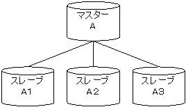
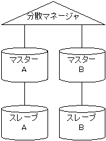
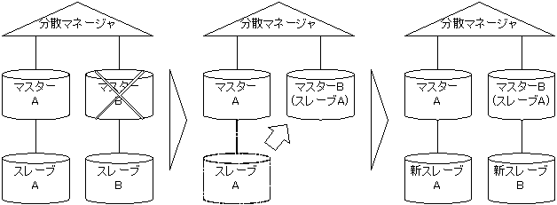
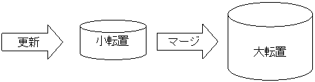

本書はDoqueDBのマニュアルです。 検索サーバーやRDBMSとしてDoqueDBをお使いいただくために必要な情報が書かれています。
先頭から順番に読んでもかまいませんが、 目的に応じて以下のセクションを読むことをおすすめします。
本書は、DBMSを使ったソフトウェアの開発経験や、 サーバ管理の経験のある方を対象としています。 そのため、ある程度の一般知識を前提とした記載があります。 未経験者の方はその他専門書等を参照することをおすすめします。
DoqueDBはリコーで開発された全文検索エンジンであり、 情報検索システムで必要とされる優れた検索性能を提供します。 また、一般的なRDBMSとしての機能も有しています。
DoqueDBの全文検索エンジンとしての特徴は以下のとおりです。
DoqueDBはRDBMSとして非常に重要な以下の機能を有しています。
また、SQLやJDBCを使用したアクセスが可能であり、 高速に全文検索可能な情報検索アプリケーションを容易に構築できます。
本書は、構文、入力例、プログラム等の説明にBNFの記法を用いた表記を使っています。 BNFにはいくつかの記法がありますが、 本書は標準SQL:2003で使われているBNFに従っています。 以下に本書が用いている特殊な意味をもった記号をあげます。
また、BNF以外では以下の記号に特殊な意味を持たせています。
本章では、データベースの基本的な知識を持つ人を対象として、 全文索引の簡単な使用方法を記載しています。
DoqueDBには豊富な全文検索機能があります。 全文検索は、全文索引を定義することにより利用可能となります。 全文索引は転置ファイル形式の索引ファイルになっており、 確率モデルに基くスコアを取得することができます。 詳細については、附録の全文索引の使い方を参照してください。
全文索引は、文字列型または配列文字列型のカラムに定義することができます。 SQL構文は以下のようになっています。
create fulltext index <索引名> <表名> on <索引要素リスト> [ <言語列指定> ] [ <スコア調整列指定> ] [ <ヒント句> ] [ <索引エリア句> ]
全文索引は3つの索引タイプをサポートしており、 索引タイプによって検索動作が変わってきます。
索引タイプの指定は <ヒント句> で行います。 たとえば、word索引を定義するには以下のように記述します。
SQL> create fulltext index I on T(C) hint 'inverted=(indexing=word)';
転置ファイルという構造は、 その特性上、ファイルサイズが大きくなると更新に非常に時間がかかるようになります。 DoqueDBの全文索引は、小さいサイズの小転置ファイルと、 大きなサイズの大転置ファイルを保持し、更新時間の増大を抑えることができます。 この指定は <ヒント句> で行います。
SQL> create fulltext index I on T(C) hint 'delayed';
遅延更新の指定は、オプションです。 遅延更新の詳細については全文索引の遅延更新を参照してください。
与えられた検索条件などに合致したものを、 適合度の順にランキングして提示することができます。 ランキング検索を行うには、 検索条件に対する各テキストデータのスコアを計算する関数 score() を selectリストに追加します。 次のSQL文では、表 T の列 data に対し、単語「システム」による ランキング検索を行います。
SQL> select rowid, score(data) from T
where data contains 'システム' order by score(data) desc;
ランキング検索の結果は、仮想的な列 score が追加された行の集合となります。 列 score には、 関数 score() が算出した、各テキストデータの検索条件への適合度を示す値が 入ります。
検索条件に自然文を利用する検索を、自然文検索と呼びます。 自然文検索を行うには、containsオペランドでfreetextを指定します。 次のSQL文では、 自然文「リコーの環境保護への取り組み」による自然文検索を行います。
SQL> select rowid, score(data) from T
where data contains freetext('リコーの環境保護への取り組み')
order by score(data) desc;
自然文検索の仕組みは以下のようになっています。
複数のカラムを指定して１つの全文索引を定義することができます。 これにより、複合索引の対象カラムの任意の組み合わせで擬似的に 連結した文字列に対して検索することが可能となります。 たとえば、ある表に、タイトル、要約、本文と３つのカラムがあったとします。 これまでは、これらのカラムを別々の検索項目としてランキング検索する場合と、 これらのカラムの文字列を連結したものを対象としてランキング検索する場合があるとき、 これらのカラムを連結したカラムを用意する必要がありました。 しかし、この全文複合索引を定義すれば、連結したカラムを用意する必要がなくなり、 ディスクスペースを節約し、更新処理を高速にすることが可能となります。
SQL> create table T(title nvarchar(128), abstract ntext, body ntext);
SQL> create fulltext index T_ALL on T(title, abstract, body)
hint 'delayed, inverted=(indexing=dual, tokenizer=DUAL:JAP:ALL:2)';
SQL> select title from T where (title, abstract, body) contains 'システム'
order by score(title, abstract, body) desc;
DoqueDBのインストール方法とパッケージ内容を説明します。
DoqueDBを1つのサーバに複数インストールすることも可能です。 詳細については、附録の複数インストールを参照してください。
DoqueDBのインストールパッケージはdoquedb-<バージョン>.<アーキテクチャー>.tar.gzです。 パッケージには以下のファイルとディレクトリが含まれています。
| ファイル名・ ディレクトリ名 |
説明 |
|---|---|
| README.txt | 最初に読むべき文書です。 |
| conf.sh | インストールパスや、設定用のパラメーターが記述されているファイルです。 |
| install.sh | インストールスクリプトです。 インストールパス等の情報は、conf.sh を参照しています。 |
| setup.sh | インストール後にDoqueDBのセットアップを行うスクリプトです。 必要なパラメーターがパラメーターファイルに書き込まれ、 データベースの初期化が行われます。 |
| unsetup.sh | アンインストール前にDoqueDBのアンセットアップを行うスクリプトです。 全データベースを削除します。 |
| uninstall.sh | アンインストールスクリプトです。 |
| doquedb.sh | DoqueDBデーモンの開始・停止を行うスクリプトDoqueDBの雛形です。 install.shはこのファイルを参照し、DoqueDBスクリプトを作成します。 |
| Sqli.sh | SQLインタプリターであるスクリプトsqliの雛形です。 |
| UserAdd.sh UserDel.sh UserPassword.sh |
ユーザー管理を行うスクリプトuseradd, userdel, userpasswordの雛形です。 |
| load.sh unload.sh |
一括ロード/アンロードを行うスクリプトdqload, dqunloadの雛形です。 |
| dump.sh restore.sh |
データベースのバックアップとリストアを行うスクリプトです。 詳細は 3.9.5 データベースファイルのコピー をご覧ください。 |
| obj/bin/ | DoqueDBデーモン、SQLインタプリター、ユーザー管理プログラムなどの 各種実行ファイルが格納されているディレクトリです。 |
| obj/data/ | 形態素解析、異表記正規化、質問処理の辞書が格納されているディレクトリです。 |
| obj/etc/ | サーバの初期設定ファイルが格納されているディレクトリです。 |
| obj/java/ | 一括ロード/アンロードを実行するjarファイルが格納されているディレクトリです。 |
| obj/lib/ | DoqueDBの各種ライブラリーが格納されているディレクトリです。 C++クライアントプログラムを作成する際に使用するライブラリーも格納されています。 |
| jdbc/ hibernate/ |
JDBCドライバー、Hibernateダイアレクトファイルが格納されているディレクトリです。 対応するjavadoc形式のリファレンスマニュアルも含まれています。 |
| doc/ | サンプルプログラムが格納されているディレクトリです。 |
| LICENSE/ | DoqueDBが使用するOSSのライセンス情報が格納されているディレクトリです。 詳細についてはNOTICE.txtをご覧ください。 |
DoqueDBのインストール手順を説明します。
$ sudo su - # tar xvf doquedb-<バージョン>.<アーキテクチャー>.tar.gz ... # cd doquedb
# vi conf.sh
# ./install.sh Install Objects必要なファイルが、インストールディレクトリにインストールされます。
# ./setup.sh Install Mod Parameter Install Default Parameter Install System Parameter Initialize Databaseデフォルトのデータベースパスは<インストールディレクトリ>/dbです。
# cd /var/lib/DoqueDB/bin
# ./doquedb start SydServer starting (root) ... done.
# ln -s /var/lib/DoqueDB/bin/doquedb /etc/rc3.d/S99doquedb # ln -s /var/lib/DoqueDB/bin/doquedb /etc/rc4.d/S99doquedb # ln -s /var/lib/DoqueDB/bin/doquedb /etc/rc5.d/S99doquedb # ln -s /var/lib/DoqueDB/bin/doquedb /etc/rc6.d/K01doquedb # ln -s /var/lib/DoqueDB/bin/doquedb /etc/rc2.d/K01doquedb # ln -s /var/lib/DoqueDB/bin/doquedb /etc/rc1.d/K01doquedb # ln -s /var/lib/DoqueDB/bin/doquedb /etc/rc0.d/K01doquedb
インストール後のDoqueDBのファイルについて説明します。 <インストールディレクトリ>以下の構成は以下のようになります。
<インストールディレクトリ>/ ├ bin/ │ └ java/ ├ data/ ├ db/ ├ doc/ │ └ sample/ ├ etc/ ├ lib/ ├ log/ ├ LICENSE/ │ └ NOTICE.txt ├ README.txt └ README_ja.txt
| ファイル名 | 説明 |
|---|---|
| doquedb | DoqueDBデーモン起動スクリプト |
| sqli | SQLインタプリター |
| userpassword useradd userdel |
ユーザー管理コマンド
|
| dqload dqunload |
一括ロード/アンロードコマンド |
| ファイル名 | 説明 |
|---|---|
| default.conf mod.conf system.conf |
パラメーターファイル
|
| user.pswd | ユーザのパスワード保存ファイル |
| ファイル名 | 説明 |
|---|---|
| libSyKernel.so | DoqueDBカーネル |
| libSyDrvAry.so libSyDrvBmp.so libSyDrvBtr.so, libSyDrvBtr2.so libSyDrvFts.so, libSyDrvFts2.so libSyDrvInv.so libSyDrvKtr.so libSyDrvLob.so libSyDrvRcd.so, libSyDrvRcd2.so libSyDrvVct.so, libSyDrvVct2.so libSyDrvCom.so |
各種ファイルドライバー
|
| libSyMesEng33e.so libSyMesJpn33e.so |
メッセージライブラリー
|
| libTrmeister33e.so | DoqueDBクライアントライブラリー |
| libenstem.so libunajp.so libuna.so |
言語処理ライブラリー
|
| libcommon.so | C++共通ライブラリー |
| libboost_system.so.1.55.0 libboost_filesystem.so.1.55.0 |
Boost C++ライブラリー (NOTICE.txtをご覧ください) |
| ファイル名 | 説明 |
|---|---|
| doquedb.log | ログファイル |
| doquedb.pid | DoqueDBデーモンのプロセスID (起動時に作成されます) |
インストール時、DoqueDBのログファイルは、 /var/lib/DoqueDB/log/doquedb.logに書き出すように設定されます。 このログファイルは、DoqueDBデーモン起動中にローテートすることができません。 しかし、DoqueDBはログをsyslogに書き出すことができます。 この機能を使用して、ログファイルをローテートします。
Common_MessageOutputError ModErrorMessage Common_MessageOutputInfo ModMessage
ModMessageOutputError 4 ModMessageOutputNormal 4
local0.info /var/log/doquedb.logさらに、*.err(なければ *.info)のselectorフィールドに、local0.noneを追加します。
*.err;local0.none /var/log/system.log
# kill -HUP <syslogdのプロセスID>
/var/log/doquedb.log
DoqueDBのアンインストール手順を説明します。
$ sudo su - # cd /var/lib/DoqueDB/bin # ./doquedb stop SydServer stopping (root) .... done.
# tar xvf doquedb-<バージョン>.<アーキテクチャー>.tar.gz ... # cd doquedb
# vi conf.sh
# ./unsetup.sh Uninstall Database # ./uninstall.sh Uninstall Objects手動でも削除できます。 その場合は、<インストールファイル>をすべて削除してください。
# rm -fr /var/lib/DoqueDB
# rm /etc/rc3.d/S99doquedb # rm /etc/rc4.d/S99doquedb # rm /etc/rc5.d/S99doquedb # rm /etc/rc6.d/K01doquedb # rm /etc/rc2.d/K01doquedb # rm /etc/rc1.d/K01doquedb # rm /etc/rc0.d/K01doquedb
DoqueDBのサーバ管理方法を説明します。
サービスを起動あるいは停止したり、
サービスの状態を確認するにはdoquedbコマンドを使用します。
doquedbの実行にはroot権限が必要です。
$ sudo su - #
コマンドの書式を以下に示します。
doquedb { start | stop | restart | status | reload | clean_temporary }
オプションの意味は以下のとおりです。
# /var/lib/DoqueDB/bin/doquedb start SydServer starting (<実行ユーザー>) ... done. (サービスが起動した) または SydServer (pid <プロセスID>) is already running. (サービスはすでに実行中)
# /var/lib/DoqueDB/bin/doquedb stop SydServer stopping (<実行ユーザー>) .... done. (サービスが停止した) または SydServer is not started. (サービスは実行中でない)
# /var/lib/DoqueDB/bin/doquedb restart SydServer stopping (<実行ユーザー>) .... done. (サービスが停止した) SydServer starting (<実行ユーザー>) ... done. (サービスが起動した) または SydServer is not started. (サービスは実行中でない) SydServer starting (<実行ユーザー>) ... done. (サービスが起動した)
# /var/lib/DoqueDB/bin/doquedb status SydServer (pid <プロセスID>) is running. (サービスは実行中) または SydServer is not started. (サービスは実行中でない) または SydServer dead, but <PIDファイル> exists. (サービスは起動していないがPIDファイルがある)
# /var/lib/DoqueDB/bin/doquedb reload SydServer reload (pid <プロセスID>) (サービスのリロードを実行した) または SydServer is not started. (サービスは実行中でない)
# /var/lib/DoqueDB/bin/doquedb clean_temporary SydServer (pid <プロセスID>) is running. (サービスは実行中) または SydServer is not started. (サービスは実行中でない) または SydServer dead, but <PIDファイル> exists. (PIDファイルを削除した)
DoqueDBのサーバのバージョンを確認する方法について説明します。
確認方法は以下のとおりです。
クライアントについては4章 クライアントインターフェースのバージョンを参照してください。
なお、上記方法で確認できるバージョン番号と、 2章 インストールのパッケージ等で使われるバージョン番号の採番方法は異なります。
DoqueDBで指定できるパラメーターについて説明します。
パラメーターの格納場所は以下のとおりです。
パラメーターの変更は、サービスを再起動後に反映されます。 ただし、以下のパラメーターはサービス再起動しても反映されない場合があります。
詳細については、B+木索引定義を参照してください。
インストール時にすでに設定されているパラメーターについて説明します。
| パラメーター名 | 型 | 説明 |
|---|---|---|
| Schema_DefaultAreaPath | 文字列 | データベースを格納するデフォルトのパス |
| Schema_SystemAreaPath | 文字列 | データベースのスキーマ情報を格納するデフォルトのパス |
| Trans_TimeStampPath | 文字列 | DoqueDBのタイムスタンプファイルのパス |
| Common_UnaResource_1 | 文字列 | 異表記正規化に使用する辞書のパス |
| Inverted_TermResource_0 | 文字列 | 質問処理に使用する辞書のパス |
| Inverted_TermResource_1 | 文字列 | 質問処理に使用する辞書のパス |
| Common_MessageOutputError | 文字列 | エラーレベルのログの出力先 |
| Common_MessageOutputInfo | 文字列 | 情報レベルのログの出力先 |
| Communication_PortNumber | 数値 | DoqueDBのポート番号 |
| Server_PasswordFilePath | 文字列 | ユーザーのパスワードを保管するファイルのパス |
異表記正規化辞書、質問処理辞書の詳細については、 附録の異表記正規化辞書、 質問処理辞書を参照してください。
チューニング用のパラメーターについて説明します。
| パラメーター名 | 型 | デフォルト値 | 単位 | 説明 |
|---|---|---|---|---|
| Buffer_NormalPoolSize | 文字列 | 1G | byte | 通常のデータベースに使用するバッファサイズを指定 |
| Buffer_ReadOnlyPoolSize | 文字列 | 64M | byte | 読み出し専用データベースに使用するバッファサイズを指定 |
| Buffer_TemporaryPoolSize | 文字列 | 64M | byte | 一時表に使用するバッファサイズを指定 |
| Inverted_BatchSizeMax | 文字列 | 512M | byte | 全文索引再構成時に一時的に使用するメモリーのサイズを指定 |
| Checkpoint_Period | 数値 | 1800000 | ミリ秒 | チェックポイントの間隔を指定 |
DoqueDBのプロセスは、 Buffer_NormalPoolSizeで指定したサイズ＋40～100MB程度のメモリを消費します。 DoqueDB専用マシンでは、Buffer_NormalPoolSizeを 空き実メモリーの1/2程度に設定してください。 なお、256MBより小さい値を設定することはできません。
Buffer_NormalPoolSizeは、挿入データのサイズに制限を与えます。 この値より1レコードのサイズが大きいデータは挿入できません。 ただしLOB型は既存のデータに新しいデータを追加することができるので、 この値より大きいサイズのデータを格納できます。 詳細については、附録のLOB型の使い方を参照してください。 また、ビットマップ索引で異なりデータ数が多いデータも挿入できません。 詳細については、附録のビットマップ索引の使い方を参照してください。
Buffer_TemporaryPoolSizeは、一時表のデータサイズに制限を与えます。 一時的に保持されるレコードの合計サイズがこの値より大きい一時表は作成できません。
デフォルトのチェックポイント間隔は30分です。 しかし、DoqueDBはデータ更新サイズに応じてチェックポイントの間隔を可変にしていますので、 データ更新が多い場合は、それよりも早くチェックポイントが発生します。
チェックポイントの間隔を制御するのは Checkpoint_Period ですが、 チェックポイントの間隔を固定にすることはできません。
検索用のパラメーターについて説明します。
| パラメーター名 | 型 | デフォルト値 | 説明 |
|---|---|---|---|
| Execution_LikeNormalizedString | 数値 | (下記参照) | 索引を使用しないlike演算処理の正規化方法と、B+木索引の正規化方法を指定する。
|
Execution_LikeNormalizedStringのデフォルト値は、 正規化の適用対象により異なります。 索引を使用しないLIKE演算処理の正規化方法のデフォルト値は、「0」です。 B+木索引の正規化方法のデフォルト値は、「1」です。
B+木索引の正規化は、B+木索引定義時に<ヒント句>を設定する必要があります。
ログ用のパラメーターについて説明します。
| パラメーター名 | 型 | デフォルト値 | 説明 |
|---|---|---|---|
| Plan_TraceOptimizationOutput | 文字列 | 0 | アクセスプランの出力先ファイル名
|
| Plan_TraceExecutionOutput | 文字列 | 0 | 実行トレースの出力先ファイル名。実行トレースは主にデータベースを構成するファイルへの入出力操作のログ。
|
| Plan_TraceLevel | 数値 | 0 | どの程度の詳しさで出力するかをコントロールする数値を指定。数値が大きいほど詳細になる。通常は 2 を指定する。 |
| Statement_KeepSQLStatement | 文字列 | false | サーバーが受け取ったSQL文の文字列をパーズ後も保持し続けることを指示
|
| Server_PrintSQLStatement | 文字列 | 0 | 受け取ったSQL文の文字列の出力先ファイル名
|
| Server_PrintParameter | 文字列 | 0 | 「?」を使ったSQL文やPreparedStatementに対して渡されたパラメーターの出力先ファイル名
|
| Server_PrintTime | 文字列 | 0 | SQL文1つごとの実行時間の出力先ファイル名
|
| Server_PrintSessionID | 文字列 | 0 | セッションIDの出力先ファイル名
|
DoqueDBには組込みデータベースと組込み表が用意されています。 これらを用いて、SQL文でスキーマ情報を取得することができます。
組込みデータベースとして、以下のものが用意されています。
| データベース名 | 説明 |
|---|---|
| $$SYSTEMDB | ユーザー定義のデータベースを管理する、読み取り専用のメタデータベースです。 組込み表SYSTEM_DATABASEはこのデータベースからのみ参照できます。 |
| DefaultDB | デフォルトで用意されている、内容が空のデータベースです。 任意の目的に利用できますが、削除しないでください。 |
組込み表として、以下のものが用意されています。 SYSTEM_DATABASE, SYSTEM_USER, SYSTEM_SESSIONはシステム全体で共有する情報を保持する表です。 それ以外は個々のデータベースに割り当てられた情報を保持します。
| 表名 | 保持する情報 | どのデータベースから参照可能か？ | |
|---|---|---|---|
| $$SYSTEMDB | DefaultDB ユーザー定義のDB |
||
| SYSTEM_DATABASE | システム内のデータベース | ○ | × |
| SYSTEM_USER | システム内のユーザー | ○ | ○ |
| SYSTEM_SESSION | システムで実行中のセッション | ○ | ○ |
| SYSTEM_PRIVILEGE | データベースに対するロール | × | ○ |
| SYSTEM_TABLE | データベース内の表 | × | ○ |
| SYSTEM_COLUMN | データベース内の列 | × | ○ |
| SYSTEM_INDEX | データベース内の索引 | × | ○ |
| SYSTEM_FILE | データベースの構成ファイル | × | ○ |
それぞれの組込み表は以下に示す列を持っています。 列名の [ ] はその列が配列であることを示します。
| 列名 | 説明 |
|---|---|
| ROWID | データベースのID |
| Name | データベースの名称 |
| Flag | データベースの属性 |
| Paths [3] | データベースのファイルのパス
|
| MasterURL | 非同期レプリケーション構成時のマスターデータベースのURL |
| 列名 | 説明 |
|---|---|
| UserID | ユーザーのID |
| Name | ユーザー名 |
| Type | ユーザー種別 (0:スーパーユーザー, 1:一般ユーザー) |
| 列名 | 説明 |
|---|---|
| ClientID | クライアントのID (データソースごとに決められる) |
| HostName | クライアントのホスト名称 |
| ConnectedTime | 最初に接続した日時 |
| ProtocolVersion | プロトコルバージョン |
| CryptMode | 暗号化方式の名称 ※OSS版では暗号化通信は無効化されています。 |
| SessionID | セッションのID |
| DatabaseName | データベースの名称 |
| UserName | ユーザーの名称 |
| SessionStartTime | セッション開始日時 |
| StatementType | 実行中のSQL文の種別 |
| TransactionState | トランザクションの状態 (NotInProgress:未実行, ReadWrite:更新中, ReadOnly:参照中, VersionUse:版使用中) |
| TransactionStartTime | トランザクション開始日時 |
| SqlStatement | 実行中のSQL文 |
| 列名 | 説明 |
|---|---|
| UserID | ユーザーのID |
| Privilege | 割り当てられているロール名 |
| ObjectType | ロールの対象となるオブジェクト種別 (現状は常にnull) |
| ObjectID | ロールの対象となるオブジェクトの名称 (現状は常にnull) |
| 列名 | 説明 |
|---|---|
| ROWID | 表のID |
| Name | 表の名称 |
| AreaID [7] | エリアのID
|
| 列名 | 説明 |
|---|---|
| ROWID | 列のID |
| ParentID | 列が属する表のID |
| Name | 列の名称 |
| Type | 列の種別 (1:ROWID, 2:通常列, 3:定数列, 4:関数列) |
| Position | 表の中での列の定義順 |
| FieldID | 列に対応するFIELDオブジェクトのROWID (通常、クライアントは使わない) |
| Default | 列のデータのデフォルト値 (列定義に<DEFAULT句>があった場合) |
| Flag | 列の属性 (0:制限なし, 奇数:NOT NULL, 6か7:無制限可変長, 8か9:FIXED, 10か11:VARIABLE) |
| MetaData | 文字列配列形式にしたJavaのColumnMetaData |
| 列名 | 説明 |
|---|---|
| ROWID | 索引のID |
| ParentID | 索引が属する表のID |
| Name | 索引の名称 |
| Type | 索引の種別 (1:B+木索引, 2:全文索引, 3:ビットマップ索引, 4:配列索引) |
| Flag | 索引の属性 (0:何もなし, 1:Unique) |
| FileID | 索引の情報を格納するファイルのID |
| AreaID [7] | エリアのID (索引を構成するファイルの置き場所) |
| HintString | 索引のヒント情報 |
| 列名 | 説明 |
|---|---|
| ROWID | ファイルのID |
| ParentID | ファイルが属する表のID |
| Name | ファイルの名称 |
| Type | ファイルの種別 (1:レコードファイル, 2:B+木ファイル, 3:全文ファイル, 4:ベクターファイル, 5:LOBファイル, 6:ビットマップファイル, 7:配列ファイル) |
| FileID | ファイルの生成情報を保持するバイナリデータ (通常、クライアントは使わない) |
| AreaID [7] | エリアのID
|
| FileSize | データ取得時のファイルサイズ |
$$SYSTEMDBおよび「使ってみよう」 のサンプルデータベースに接続して組込み表を表示した例を示します。 (見やすくするため、適宜空行を挿入してあります。)
$ sqli -remote localhost 54321 -user root -password <rootのパスワード> -database '$$SYSTEMDB'
SQL> select * from system_database;
{Name,Flag,Paths,MasterURL}
{DefaultDB,2,(null),(null)}
{sampleSqli,2,(null),(null)}
SQL> select * from system_user;
{UserID,Name,Type}
{0,root,0}
{100,dbadmin,1}
{200,dbuser,1}
{201,abc,1}
SQL> select * from system_session;
{ClientID,HostName,ConnectedTime,ProtocolVersion,CryptMode,SessionID,DatabaseName,UserName, SessionStartTime,StatementType,TransactionState,TransactioStartTime,SqlStatement}
{131,<ホスト名>,2023-06-26 15:27:50.443,4,(null),145,$$SYSTEMDB,root,2023-06-26 15:27:50.444,QueryExpression,VersionUse,2023-06-26 15:28:19.276,select * from system_session}
SQL> exit;
$ sqli -remote localhost 54321 -user root -password <rootのパスワード> -database sampleSqli
SQL> select * from system_privilege;
{UserID,Privilege,ObjectType,ObjectID}
{0,{system_operations,database_operations,data_operations,reference_operations},(null),(null)}
{100,{database_operations,data_operations,reference_operations},(null),(null)}
{200,{data_operations,reference_operations},(null),(null)}
SQL> select * from system_table;
{Name,AreaID}
{AozoraBunko,{4294967295,4294967295,4294967295,4294967295,4294967295,4294967295,4294967295}}
SQL> select * from system_column;
{ParentID,Name,Type,Position,FieldID,Default,Flag,MetaData}
{2,ROWID,1,0,12,size=8,8,{12,int,4,0,0,(null),(null)}}
{2,docId,2,1,16,size=8,9,{12,int,10,0,0,(null),(null)}}
{2,title,2,2,17,size=8,10,{4,nvarchar,256,0,0,(null),(null)}}
{2,lastName,2,3,18,size=8,10,{4,nvarchar,128,0,0,(null),(null)}}
{2,firstName,2,4,19,size=8,10,{4,nvarchar,128,0,0,(null),(null)}}
{2,url,2,5,20,size=8,10,{2,varchar,128,0,0,(null),(null)}}
{2,content,2,6,21,size=8,10,{4,nvarchar,-1,0,0,(null),(null)}}
SQL> select * from system_index;
{ParentID,Name,Type,Flag,FileID,AreaID,HintString}
{2,AozoraBunko_$$PrimaryKey,1,5,25,(null),(null)}
{2,INDEX1,2,0,31,(null),'kwic, delayed, inverted=(normalized=(stemming=false, deletespace=false), indexing=dual, tokenizer=DUAL:JAP:ALL:1 @NORMRSCID:1 @UNARSCID:1)'}
SQL> select * from system_file;
{ParentID,Name,Type,FileID,AreaID,FileSize}
{2,BTR_AozoraBunko_$$PrimaryKey,2,size=259,(null),16384}
{2,RCD_AozoraBunko,1,size=459,(null),24264704}
{2,VCT_AozoraBunko_$$Conversion,4,size=180,(null),32768}
{2,FTS_INDEX1,3,size=1299,(null),19423232}
SQL> exit;
DoqueDBのユーザーの取扱いについて説明します。
DoqueDBに接続する際は、ユーザー名とパスワードを指定する必要があります。 指定方法は4章 クライアントインターフェースを参照してください。
インストール時は、固定のスーパーユーザー(root)だけが登録されており、 そのパスワードには初期値(doqadmin)が設定されています。 パスワードの変更やユーザーの追加削除は、次節以降で説明するコマンドにより行います。 パスワードは、デフォルトで設定されているパラメーターのServer_PasswordFilePathが 示すファイルに保管されます。
rootは以下の操作を実行できます。
root以外の一般ユーザーは以下の操作を実行できます。
新規に作成するユーザー名には以下の制限があります。
パスワードを変更するにはuserpasswordコマンドを使用します。
コマンドの書式は以下のとおりです。
userpassword -remote <ホスト名> <ポート番号> [-user <ユーザー名> -password <パスワード>] [オプション]
一般ユーザーは自身のパスワードを変更できます。
スーパーユーザー(root)は任意のユーザーのパスワードを変更できます。
パスワードは対話的に2回の入力が求められます。
引数の書式と説明は以下のとおりです。
一般ユーザーが自身のパスワードを変更する例を以下に示します。
$ userpassword -remote localhost 54321 User: <ユーザー名> Password: <現在のパスワード> New password: <新しいパスワード> Retype new password: <パスワード再入力> Changed a password.
スーパーユーザーが別ユーザーのパスワードを変更する例を以下に示します。
$ userpassword -remote localhost 54321 -user root -password <rootのパスワード> user name to change a password: <パスワードを変更するユーザー名> New password: <パスワード> Retype new password: <パスワード再入力> Changed a password.
新規ユーザーを作成するにはuseraddコマンドを使用します。
useraddコマンドを実行できるのはスーパーユーザーだけです。
コマンドの書式は以下のとおりです。
useradd -remote <ホスト名> <ポート番号> -user <ユーザー名> -password <パスワード> [オプション]
引数の書式と説明は以下のとおりです。
新規作成されたユーザーにはパスワードとロールが設定されていません。
userpasswordコマンドでパスワードを設定してください。
ロールは、あるデータベースに対してそのユーザーがもつ操作権限を示します。
ロールの設定については3.5.6 ユーザー権限管理を参照してください。
新規ユーザーの作成とパスワードの設定、またロールの設定を行う例を以下に示します。
$ useradd -remote localhost 54321 -user root -password <rootのパスワード> add user: newuser user id: <Enter> Create a user. $ userpassword -remote localhost 54321 -user root -password <rootのパスワード> user name to change a password: newuser New password: <パスワード> Retype new password: <パスワード再入力> Changed a password. $ sqli -remote localhost 54321 -user root -password <rootのパスワード> -database <データベース名> SQL> grant data_operations,reference_operations to newuser; SQL> exit;
ユーザーを削除するにはuserdelコマンドを使用します。
userdelコマンドを実行できるのはスーパーユーザーだけです。
コマンドの書式は以下のとおりです。
userdel -remote <ホスト名> <ポート番号> -user <ユーザー名> -password <パスワード> [オプション]
引数の書式と説明は以下のとおりです。
実行例を以下に示します。
$ userdel -remote localhost 54321 -user root -password <rootのパスワード> delete user: <削除するユーザー名> The authority of all DB is deleted automatically. OK? [y/n]: y Delete a user.
各データベースには以下のロールが定義されています。
これらのロールを一般ユーザーに割り当てることで、 一般ユーザーが実行できるSQL文を制御します。 SQL文と権限の関係は以下のとおりです。
| SQL文 | スーパーユーザー | 一般ユーザー | ||||
|---|---|---|---|---|---|---|
| system_ operations |
database_ operations |
data_ operations |
reference_ operations |
ロールなし | ||
| CREATE DATABASE | ○ | |||||
| MOUNT | ○ | |||||
| DISCONNECT | ○ | |||||
| DROP DATABASE | ○ | ○ | ||||
| ALTER DATABASE | ○ | ○ | ||||
| UNMOUNT | ○ | ○ | ||||
| START BACKUP | ○ | ○ | ||||
| END BACKUP | ○ | ○ | ||||
| GRANT | ○ | ○ | ||||
| REVOKE | ○ | ○ | ||||
| CREATE TABLE | ○ | ○ | ||||
| DROP TABLE | ○ | ○ | ||||
| ALTER TABLE | ○ | ○ | ||||
| ALTER INDEX | ○ | ○ | ||||
| CREATE AREA | ○ | ○ | ||||
| DROP AREA | ○ | ○ | ||||
| ALTER AREA | ○ | ○ | ||||
| VERIFY | ○ | ○ | ||||
| CREATE CASCADE | ○ | ○ | ||||
| ALTER CASCADE | ○ | ○ | ||||
| DROP CASCADE | ○ | ○ | ||||
| CREATE PARTITION | ○ | ○ | ||||
| ALTER PARTITION | ○ | ○ | ||||
| DELETE | ○ | ○ | ||||
| INSERT | ○ | ○ | ||||
| UPDATE | ○ | ○ | ||||
| CREATE INDEX | ○ | ○ | ||||
| DROP INDEX | ○ | ○ | ||||
| CREATE FUNCTION | ○ | ○ | ||||
| DROP FUNCTION | ○ | ○ | ||||
| SELECT | ○ | ○ | ||||
| CREATE TABLE(一時表に対して) | ○ | ○ | ||||
| DROP TABLE(一時表に対して) | ○ | ○ | ||||
| DELETE(一時表に対して) | ○ | ○ | ||||
| INSERT(一時表に対して) | ○ | ○ | ||||
| UPDATE(一時表に対して) | ○ | ○ | ||||
| SELECT(データベース一覧に対して) | ○ | ○ | ○ | ○ | ○ | ○ |
| START TRANSACTION | ○ | ○ | ○ | ○ | ○ | ○ |
| COMMIT | ○ | ○ | ○ | ○ | ○ | ○ |
| ROLLBACK | ○ | ○ | ○ | ○ | ○ | ○ |
| SYNC | ○ | ○ | ○ | ○ | ○ | ○ |
| CHECKPOINT | ○ | ○ | ○ | ○ | ○ | ○ |
以下の点に注意してください。
一般ユーザに対するロールの付与と削除は、
rootやsystem_operationsのロールを持つユーザーであれば、
SQLのGRANT文で行うことができます。
詳細については権限管理を参照してください。
以下の点に注意してください。
DoqueDBのデータベース名などには、マルチバイト文字が使えます。 また、NCHAR、NVARCHARなどの国際文字列型の列には、多国語のデータを格納できます。
しかし、DoqueDBが検索においてもサポートしている言語、 すなわち異表記正規化辞書をもつのは、 日本語と英語の2言語に限られます。
全文索引作成時にどの言語の異表記正規化辞書を使うかは、 索引作成時の言語指定や異表記正規化辞書の明示的な指定によって決まります。 ここで、たとえば言語指定と索引を作成する列データの言語が合わないと、 単語への切り出しや異表記正規化のルールも合わないことになります。 しかし、索引の作成でエラーにはなりません。 合わないなりに何らかの切り出しが行われ、索引が作成されます。 この場合は、検索するとき、 言語指定や使用する異表記正規化辞書を索引作成時と同じにすると、 ヒットする可能性が高くなります。 なお、全文索引作成時や検索で、言語指定などがされないときは、 <ヒント句>の<UNAリソース指定>で指定された辞書のデフォルト言語が使用されます。
また、全文索引の自然文検索は英語と日本語のみのサポートです。
DoqueDBのデータベースを構成するファイルについて説明します。
DoqueDBのデータベースを構成するファイルは、 デフォルトで設定されているパラメーターの Schema_DefaultAreaPath、Schema_SystemAreaPath、Trans_TimeStampPath が指定するパスに作成されます。
個々のデータベースのパスを指定したい場合は、データベース定義を参照してください。 個々のデータベースのパスを変更したい場合は、 データベース定義変更を参照してください。
個々の表や索引のパスを指定したい場合は、エリアを使います。 エリア定義、表定義、索引定義を参照してください。 個々の表や索引のパスを変更したい場合は、 エリア定義変更、表定義変更、索引定義変更を参照してください。
データベースを構成するファイル数は、スキーマに依存します。 格納データ数には依存しません。
DoqueDBのバックアップは、以下の二種類の操作が可能です。
| バックアップ方法 | 説明 |
|---|---|
| オンラインバックアップ | データベースへのアクセスを許したままのバックアップ。特徴は以下のとおりです。
|
| オフラインバックアップ | データベースへのアクセスを停止してのバックアップ。特徴は以下のとおりです。
|
本節では、オンラインおよびオフラインによるバックアップ手順と、 バックアップしたデータベースを通常の方法でリストアする手順、 また正常ではない手順で取得されたバックアップファイルを 強制的にリストアする手順を説明します。
オンラインバックアップは以下の手順で実施します。
SQL> start transaction read write;
SQL> start backup discard snapshot;start backup文の返り値として、 コピーすべきディレクトリのパス名一覧が取得できます。
SQL> end backup;
SQL> commit;
データベース「DB」をオフラインバックアップする手順を以下に示します。
SQL> alter database DB offline;
SQL> alter database DB online;
オンライン、オフラインにかかわらず、 ファイルのコピーには外部ツールを用いる必要があります。
データベース「DB」をアンマウントしてオフラインバックアップすることもできます。
SQL> unmount DB;unmount文の返り値として、コピーすべきディレクトリーのパス名一覧が取得できます。
SQL> mount DB path '/{インストールディレクトリ}/db/data/DB'
logicallog '/{インストールディレクトリ}/db/data/DB'
system '/{インストールディレクトリ}/db/system/DB';
データベースの作成時と異なり、mountに渡すパスはデータパス、論理ログパス、システムパスのすべてを指定する必要があります。
データパス、システムパスが誤っていてもエラーになりません。
データがまったく登録されていない、あるいは表がまったく定義されていないものと解釈されます。
DoqueDBではバックアップファイルに対して以下の2種類の操作が可能です。
また、オンラインバックアップとオフラインバックアップの どちらのバックアップ操作で得られたバックアップファイルに対しても 同様の操作でリストアまたはマウントが可能です。
データベース「DB」をリストアする手順を以下に示します。
SQL> drop database DB;それを避けたい場合は、drop database文の代わりに unmount文を実行してからデータベースを構成するファイルを退避してください。
SQL> unmount DB;
SQL> mount DB path '/{インストールディレクトリ}/db/data/DB'
logicallog '/{インストールディレクトリ}/db/data/DB'
system '/{インストールディレクトリ}/db/system/DB';
マウントは以下の手順で実施します。
SQL> mount newDB path '/{インストールディレクトリ}/db/data/newDB'
logicallog '/{インストールディレクトリ}/db/data/newDB'
system '/{インストールディレクトリ}/db/system/newDB';
これらの手順は、オンラインバックアップにて 正常な手順で作成されたバックアップファイルに対する手順です。 正常な手順で作成されていないバックアップファイルに対しては、 次節に示すように、強制的にリストアする方法があります。
データベースファイルをバックアップあるいはリストアする際に必要なのは、 データベースパス以下のファイルをまるごと任意のディレクトリにコピーし、 あるいはその逆を行うことです。 パッケージにはそのためのスクリプトdump.sh、restore.shが含まれています。
dump.shはデータベースパスにあるすべてのファイルを、 インストールディレクトリの指定したサブディレクトリ(省略時はsave)にコピーします。 dump.shはインストールディレクトリやデータベースパスを取得するために、 パッケージディレクトリのconf.shを参照します。
$ ./dump.sh (データベースパス以下のファイルを<インストールディレクトリ>/saveにコピーします。) $ ./dump.sh backup (データベースパス以下のファイルを<インストールディレクトリ>/backupにコピーします。)
restore.shはインストールディレクトリの指定したサブディレクトリ (省略時はsave)にあるすべてのファイルを、データベースパスにコピーします。 restore.shはインストールディレクトリやデータベースパスを取得するために、 パッケージディレクトリのconf.shを参照します。
$ ./restore.sh (<インストールディレクトリ>/save以下のファイルをデータベースパスにコピーします。) $ ./restore.sh backup (<インストールディレクトリ>/backup以下のファイルをデータベースパスにコピーします。)
インストールディレクトリ以外の場所にデータベースファイルをコピーしたり、 あるいは書き戻したりしたい場合は、dump.shやrestore.shの内容を見て、 同様の処理を行ってください。
正常な手順で得られたバックアップファイルでないデータベースファイルを用いて、 強制的にリストアすることができます。 動作は保証できませんが、たとえば、何らかの原因により データベース一覧を管理するメタデータベースが異常な状態になったが、 個別のデータベースは救いたい、といったケースでは有用です。
以下の手順で実施します。
SQL> mount newDB path '/{インストールディレクトリ}/db/data/newDB'
logicallog '/{インストールディレクトリ}/db/data/newDB'
system '/{インストールディレクトリ}/db/system/newDB' with recovery;
本節では障害発生後の再起動で実施する自動復旧処理について記述します。 DoqueDBは、プロセスが異常終了した後のプロセス再起動時に、 自動的にデータベースを使用可能な状態にします。 管理者の作業は必要ありません。 以下では自動復旧処理が必要になる具体的なケースと、 自動復旧処理について説明します。
DoqueDBではプロセスが致命的な異常状態になったときに、 データベースが壊れるような状態にならないように、 発生以後のデータベース操作を一切行わなくなります。 致命的な異常状態になるのは以下のようなケースがあります。
この状態になるとデータベース操作を行おうとしても 「Database is not available」または「Server is not available」という例外が 発生して操作できません。 この状態になっていることは、ログをチェックすることで確認できます。
Not availableな状態は正常に動作している状態ではないので、 このプロセスの終了は異常終了であり、 終了後の再起動で自動復旧が行われることになります。
DoqueDBプロセスが正常終了した場合、終了処理の中で論理ログにその旨記録します。 終了処理が行われないでプロセスが終了した場合、 次のプロセスの起動時に前回異常終了したと判断され、自動復旧が行われます。 終了処理が行われないのは以下のようなケースがあります。
自動復旧処理は以下のような手順で行われます。
上記手順の結果、異常終了時までにコミットされていたトランザクションが 実行された状態に回復します。 自動復旧が正常に実行されたかどうかは ログにDatabase recoveredと出力されたことで確認できます。
ロールフォワードリカバリは、バックアップとロールフォワードリカバリログから データベースを最新の状態に復旧するための機能です。 ロールフォワードリカバリはデータベース単位でON/OFFすることができます。 本節ではロールフォワードリカバリの使用方法について説明します。
データベースはデフォルトの状態では、ロールフォワードリカバリ機能が OFFになっています。ロールフォワードリカバリ機能をONにするには、 データベースのリカバリ属性を FULL に変更する必要があります。
SQL> alter database TEST recovery full;
データベース作成時に指定することも可能です。
SQL> create database TEST recovery full;
データベースを一度 unmount すると、リカバリ属性指定は失われます。 mount 時にリカバリ属性を指定する必要があります。
SQL> mount database TEST path '...' logicallog '...' system '...' recovery full;
データベースのロールフォワードリカバリログは、論理ログと兼用されます。 よって、データベース作成時の論理ログ格納パス指定で指定したパスにある LOGICALLOG.SYD および LOGICALLOGDIR フォルダー内のファイルがそれにあたります。
<論理ログ格納パス>
├ LOGICALLOG.SYD
└ LOGICALLOGDIR/
├ LOGFILE1.SYD
├ LOGFILE2.SYD
│ ・
│ ・
│ ・
└ LOGFILEM.SYD
ロールフォワードリカバリでサポートされるバックアップ手段は、以下のものです。
バックアップが成功した場合、それまでのロールフォワードリカバリは 不要になりますので、古いロールフォワードリカバリログを削除します。
SQL> alter database TEST online with discard logicallog;
SQL> end backup with discard logicallog;
SQL> mount TEST path '...' logicallog '...' system '...' with discard logicallog;
適切な手段でバックアップしたデータベースと、別途保存されている ロールフォワードリカバリログからロールフォワードリカバリを行う方法を説明します。
SQL> mount TEST_R path '...' logicallog '...' system '..' recovery full with recovery;
何らかの障害が発生したとき、 DoqueDBが出力するログを見ることは原因究明に役立ちます。 本節では、アクセスプランやSQL文のトレースを出力する方法を説明します。
DoqueDBが出力するログの格納場所およびファイル名については、 インストールファイルを参照してください。
ログ用パラメーターを設定することで、ログに出力する内容を変更することができます。
たとえば、どのセッションが実行したSQL文かを区別したい場合は、 以下のパラメーターを設定します。
これらの設定によるパフォーマンスの低下はわずかですので、 設定されることをおすすめします。
また、アクセスプランを確認したい場合は、以下のパラメーターを設定します。
ただし、アクセスプランの出力は、 パフォーマンスを大きく低下させることに注意してください。
以下では、アクセスプランの見かたを説明します。
たとえば以下のように定義されたスキーマがあるとします。
SQL>create table t (f int ); SQL>create index i on t(f);
これに対して普通のselect文を実行すると以下のように出力されます。
SQL>select * from t;
(Output[collection: STREAM]
(Projection[t.f[retrieve]]
t
[ScanPlan
(ScanFile(RCD_t))]))
木構造がインデントによって表された形で出ます。 最後の「ScanPlan」がスキャンアクセスのプランになったことを示し、 「ScanFile(RCD_t)」がレコードファイルからスキャンしていることを示します。
order by が付いている場合は以下のようになります。
SQL>select f from t order by f;
(Output[collection: SORTED [1:0]]
t
[ScanPlan
(ScanFile(RCD_t))])
(Output[collection: STREAM]
(Projection[t.f[retrieve]]
Input[collection: SORTED [1:0]]))
ソートするために索引を使えないので、 RCD_tからスキャンしていったん溜めるプランと、 ソートしたものから取得してクライアントに返すプランの2つがあります。 「collection: SORTED」は、 メモリ上でソートするためにいったん貯めていることを意味します。 「collection: STREAM」は、クライアントに返すことを意味します。
order by と同時に f に対する条件がついていると以下のようになります。
SQL>select f from t where f > 0 order by f;
(Output[collection: STREAM]
(Projection[t.f[retrieve]]
t[order by:(t.f[retrieve])]
[SearchPlan
(SearchFile[cond][sorted](BTR_i)
{(GreaterThan
t.f
0)})]))
今度はソートするために索引を使えるので、 BTR_i から直に取得するプランだけになります。 「SearchFile[cond][sorted](BTR_i)」が、 BTR_i に対して条件が指定され([cond])、ソート順も指定され([sorted])、 取得されることを示します。
ここでは主なログメッセージを説明します。 ログには[INFO]と[ERR]の二種類があります。 以下に主な[INFO]のログメッセージをあげます。
以下に主な[ERR]のログメッセージをあげます。
ここでは、DoqueDBが提供するクライアントインターフェースについて説明します。
DoqueDBのクライアントのバージョンを確認する方法について説明します。
サーバについては3章 サーバ管理のバージョンを参照してください。
なお、上記方法で確認できるバージョン番号と、 2章 インストールのパッケージ等で使われるバージョン番号の採番方法は異なります。
sqliとは、SQL文を実行するDoqueDBのクライアントコマンドです。 sqliシェルスクリプトが実行ファイルです。
sqliの実行方法は以下の3通りあります。
また、sqliは複数のクライアントを立ち上げて、 サーバに同時アクセスすることができます。
以下ではsqliの引数を説明します。 コマンドの書式は以下のとおりです。
sqli [オプション] [ファイル名]
引数の書式と説明は以下のとおりです。
sqliは、DoqueDBで使用できるすべてのSQL文を実行可能です。 SQL文の区切りには、<セミコロン>を使用します。
SQL> SELECT * FROM T;
sqliの組込みコマンドとして、exitがあります。 以下のように入力することによって、sqliを終了できます。
SQL> EXIT;
また、Ctrl+Dでも終了できます。
DoqueDBのJDBCドライバーについて説明します。 JDBCドライバーは、DoqueDBサーバーに対して、 JavaクライアントがJDBCによるアクセスを行うのに必要なドライバーです。 詳細については、DoqueDB JDBC Driverを参照してください。
DoqueDBのユーザー認証は以下のメソッドを使います。
java.sql.Driver.connect(url_, info_)
<ユーザー名>および<パスワード>はinfo_のプロパティとして設定します。
DoqueDBのJDBCのURLは、以下のとおりです。
jdbc:ricoh:doquedb://<ホスト名>:<ポート番号>/<データベース名>
<データベース名>には接続先のデータベース名を指定します。 create databaseを実行するときは、組み込みデータベースDefaultDBに接続してください。 <データベース名>を省略するとDefaultDBを指定したことになります。
JDBCのサンプルプログラムです。
Class.forName("jp.co.ricoh.doquedb.jdbc.Driver");
String url = "jdbc:ricoh:doquedb://localhost:54321/DefaultDB";
String user = "user1";
String password = "";
Connection conn = DriverManager.getConnection(url, user, password);
Statement state = conn.createStatement();
ResultSet resultSet = state.executeQuery("SELECT * FROM T");
int count = 0;
while (resultSet.next() == true)
count++;
resultSet.close();
state.close();
conn.close();
System.out.println("count = " + count);
JDBC経由でデータをロード/アンロードするコマンドが用意されています。 これらのコマンドを使うためにはJava実行環境が必要です。
ロードコマンドはデータをテーブルにロードします。 ロードコマンドを実行するには、 ロードスクリプトファイルとロードするレコードデータファイルが必要です。
ロードコマンドには引数として、 レコードデータファイルを記述したスクリプトファイルとデータベース接続情報を指定します。
ロードコマンドは<インストールディレクトリ>/binにあります。
使い方は以下のとおりです。
dqload <スクリプトファイル名> <ユーザー名> <パスワード>
スクリプトファイルには、ロードに必要な情報を記述します。
指定できるキーと値は以下のとおりです。
| キー名 | 内容 | デフォルト値 | 備考 |
| HOSTNAME | 接続先のホスト名 | － | 大文字小文字を区別します。 |
| PORT | 接続先のポート番号 | － | 数字以外を記述した場合、例外の処理はJDBCに任せます。 |
| DATABASE | ロード先のデータベース名 | － | 大文字小文字を区別します。 |
| FORMAT | ロードファイル形式 | TEXT |
TEXTと記述するとテキスト形式でロードファイルを読み込みます。 XMLと記述するとXML形式のロードファイルを読み込みます。 大文字小文字は区別しません。 FORMATにより読み込む拡張子が異なります。 TEXTのときは拡張子「.dat」が対象です。 XMLのときは拡張子「.xml」が対象です。 |
| DIRECTORY | ロードファイルがある場所 | カレントディレクトリ | フルパスで正確に指定してください。 存在しない場合はエラーになります。 |
| LOAD_CODE | ロードする文字コード | UTF-8 |
以下のいずれかを指定してください。
FORMATがXMLの場合、XML宣言で指定される文字コードが有効となり、 本キーワードは無視されます。 |
| FILES | ロードするファイル名 | DIRECTORYのすべてのファイル | ロードするファイル名を記述します。
FILES=以降にあるすべての行のファイル名が対象になります。 例）FILES=table1.xml table2.xml table3.xml 例）FILES= table1.xml table2.xml table3.xml ファイル名を指定しない場合、 DIRECTORYで指定したディレクトリにあるすべてのファイルを処理します。 注意）FILESは最後のキーとして指定してください。 注意）対象ファイル名はキーワードFORMATの仕様に従ってください。 備考）DIRECTORYを基準とした相対パスが指定可能ですが、上位パスはサポートしていません。 たとえば../../table.xmlは対象外です。/data/table.xmlはサポートします。 |
ロードスクリプトの記述例を以下に示します。
#************************************ #* database information #************************************ HOSTNAME=localhost PORT=54321 DATABASE=Cabinet1 #************************************ #* FORMAT: load file format #* text: text file (.dat) #* xml: xml file (.xml) #* default: text #************************************ FORMAT=TEXT #************************************ #* DIRECTORY: load directory #* default: current directory #************************************ DIRECTORY=/work/load #************************************ #* LOAD_CODE: load file encoding #* default: system code #************************************ LOAD_CODE=UTF-8 #************************************ #* FILES: load file #************************************ FILES= table1-text.dat table2-text.dat
5.3 ロードファイル仕様を参照し、ロードファイルを作成してください。
実行コマンドを入力します。以下に実行例を示します。
$ dqload load_script.txt root <rootのパスワード>
実行結果が表示されます。 エラーが出力された場合は、表示された内容またはロードのログを参考に、 スクリプトファイルまたはロードファイルを修正してください。
ロードのログは、load.log.0という名前でカレントディレクトリに保存されます。 ～.0から～.9の最大10個のファイルをローテーションして使い、 ひとつのファイルは上限の1MBに達するまで続けて書き込まれます。 ～.9まで使い切ったときは、～.0を上書きします。
アンロードコマンドはテーブル内のデータをファイルに書き出します。 アンロードコマンドを実行するには、アンロードスクリプトファイルが必要です。
アンロードコマンドには引数として、 出力するテーブルなどを記述したスクリプトファイルとデータベース接続情報を指定します。
アンロードコマンドは<インストールディレクトリ>/binにあります。
使い方は以下のとおりです。
dqunload <スクリプトファイル名> <ユーザー名> <パスワード>
スクリプトファイルには、アンロードに必要な情報を記述します。
指定できるキーと値は以下のとおりです。
| キー名 | 内容 | デフォルト値 | 備考 |
| HOSTNAME | 接続先のホスト名 | － | 大文字小文字を区別します。 |
| PORT | 接続先のポート番号 | － | 数字以外を記述した場合、例外の処理はJDBCに任せます。 |
| DATABASE | アンロード元のデータベース名 | － | 大文字小文字を区別します。 |
| FORMAT | アンロード形式 | TEXT |
TEXTと記述するとテキスト形式でアンロードファイルを作成します。 XMLと記述するとXML形式でアンロードファイルを作成します。 大文字小文字は区別しません。 |
| DIRECTORY | アンロードファイルの出力先 | カレントディレクトリ | フルパスで正確に指定してください。 ディレクトリが存在しない場合は作成します。 作成できない場合のみエラーなります。 |
| UNLOAD_CODE | アンロードする文字コード | UTF-8 |
以下のいずれかが指定できます。
FORMATがXMLの場合、XML宣言で指定される文字コードが有効となり、 本キーワードは無視されます。 |
| TABLE | アンロードするテーブル名 | － |
アンロードするテーブル名を記述します。
TABLE=以降にあるすべての行のテーブル名が対象になります。 例）TABLE=table1 table2 table3 例）TABLE= table1 table2 table3 バイナリデータなど巨大なデータを別ファイルとしてアンロードすることができます。 その場合、テーブル名に括弧を付けて括弧内に「列名:拡張子」を記述します。 たとえばtable1の列cと列eを別ファイルにアンロードするには以下のようにします。 例）TABLE=table1(c:doc,e:bmp) table2 table3 このとき、メインのアンロードデータは以下のようになります。 a,b,/work/table1.1.c.1.doc,d,/work/table1.1.e.1.bmp,f...... a,b,/work/table1.1.c.2.doc,d,/work/table1.1.e.2.bmp,f...... 注意）TABLEは最後のキーとして指定してください。 備考）別ファイルのパス名は「DIRECTORYで指定されたディレクトリ/テーブル名.アンロード回数.列名.レコード番号.指定拡張子」となります。 |
アンロードスクリプトの記述例を以下に示します。
#************************************ #* database information #************************************ HOSTNAME=localhost PORT=54321 DATABASE=Cabinet1 #************************************ #* FORMAT: unload file format #* text: text file (.dat) #* xml: xml file (.xml) #* default: text #************************************ FORMAT=XML #************************************ #* DIRECTORY: unload directory #* default: current directory #************************************ DIRECTORY=/work/unload #************************************ #* UNLOAD_CODE: unload file encoding #* default: system code #************************************ UNLOAD_CODE=UTF-8 #************************************ #* TABLE: table to unload #************************************ TABLE= table1(col2:jpg,col3:jpg) table2
実行コマンドを入力します。以下に実行例を示します。
$ dqunload unload_script.txt root <rootのパスワード>
実行結果が表示されます。 また、指定ディレクトリ/workの下にアンロードされたファイルが出力されます。 エラーが出力された場合は、表示された内容またはアンロードのログを参考に、 スクリプトファイルを修正してください。
アンロードのログは、unload.log.0という名前でカレントディレクトリに保存されます。 ～.0から～.9の最大10個のファイルをローテーションして使い、 ひとつのファイルは上限の1MBに達するまで続けて書き込まれます。 ～.9まで使い切ったときは、～.0を上書きします。
5章 ロード/アンロードコマンド で用いるロードファイルの仕様について説明します。
ロードファイルはヘッダー部とデータ部に分けて記述します。 拡張子は「.dat」である必要があります。 全体像は以下のとおりです。
<header> <ヘッダー部> </header> <データ部>
| 項目名 | 必須 | デフォルト値 | 内容 |
|---|---|---|---|
| table | ○ | なし | データ挿入先のテーブル名を指定します。 |
| column_separator | ○ | なし | 挿入するデータの区切り文字を指定します。 |
| arrayelement_separator | × | なし | 挿入する配列要素の区切り文字を指定します。 |
| record_separator | × | \n | 挿入するレコードの区切り文字を指定します。 |
| separated_file | × | false | データ部を記述する際に外部ファイルを使用するかどうかを指定します。
|
| extern | × | なし | 他のファイルに格納されているデータを挿入する列名を指定します。 複数の列がある場合は、カンマで区切って記述してください。 |
データA <区切り文字> データB <区切り文字> データC <区切り文字> ...配列の場合は、配列型の列内のデータを区切り文字で区切ります。 以下はB列が配列型のデータ列であり、配列要素区切り文字がカンマの場合です。
データA <区切り文字> データB1,データB2,データB3 <区切り文字> データC <区切り文字> ...
挿入先のテーブルに列a、b(配列型)、cがあるとき、 上の例では列aにデータA、列bにデータB1～B3、列cにデータCが挿入されます。
次の例では、 列cにディレクトリ/work/load/imageにあるファイルsample1.jpgのデータが挿入されます。
データA <区切り文字> データB <区切り文字> /work/load/image/sample1.jpg
ファイル名は絶対パスで指定します。 このように、他のファイルに格納されたデータを挿入する列は、 ヘッダー部のexternキーに列名を指定しておきます。 この場合は「extern=c」となります。
ヘッダー部に「separated_file=true」を指定した場合は、外部ファイルを作成し、 ロードファイルのデータ部には外部ファイル名を絶対パスで指定します。 外部ファイル/work/load/insertdata.datを作成し、 列a、b、cにデータA、データB、データCを挿入するときは、次のようにします。
ロードファイルのデータ部：
/work/load/insertdata.dat
外部ファイルinsertdata.dat：
データA <区切り文字> データB <区切り文字> データC
テキスト形式のロードファイルの記述例を示します。 挿入先のテーブルは以下のようなものです。
table1 (
col1 nvarchar(128),
col2 image,
col3 image
)
table2 (
col1 int,
col2 int array[4],
col3 int
)
外部ファイルを使用せずにtable1にロードする場合 (table1-text.datに相当)：
<header> table=table1 column_separator=<タブ文字> separated_file=false extern=col2,col3 </header> 'A100' /work/load/image/sample1.jpg /work/load/image/sample2.jpg 'A200' /work/load/image/sample2.jpg /work/load/image/sample1.jpg
外部ファイルを使用してtable1にロードする場合 (table1-text.datに相当)：
<header> table=table1 column_separator=<タブ文字> separated_file=true extern=col2,col3 </header> /work/load/data1.dat
外部ファイル(/work/load/data1.dat)の内容：
'A100' /work/load/image/sample1.jpg /work/load/image/sample2.jpg 'A200' /work/load/image/sample2.jpg /work/load/image/sample1.jpg
配列データをtable2にロードする場合 (table2-text.datに相当)：
<header> table=table2 column_separator=<タブ文字> arrayelement_separator=, </header> 10 1,2,3,4 1000 20 101,102,null,null 2000
ロードファイルはXML宣言で開始し、<sydney>タグと</sydney>タグで囲んだ部分に ヘッダー部とデータ部を記述します。 拡張子は「.xml」である必要があります。 全体像は以下のとおりです。
<?xml version="1.0" encoding="UTF-8"?>
<sydney>
<header>
<ヘッダー部>
</header>
<データ部>(<record>～</record>の並び)
</sydney>
| 要素名 | 必須 | デフォルト値 | 内容 |
|---|---|---|---|
| <table> | ○ | なし | データ挿入先のテーブル名を指定します。 |
| <separated_file> | × | false | データ部を記述する際に外部ファイルを使用するかどうかを指定します。
|
| <extern> | × | なし | 他のファイルに格納されているデータを挿入する列名を指定します。 複数の列があるときは、<extern>タグと</extern>タグで1つずつ囲みます。 |
データ部には、挿入するデータやデータ格納先のファイル名を、 1レコードごとに<record>タグと</record>タグで囲んで記述します。 各データは任意のタグで囲みます。
<record> <a>データA</a> <b>データB</b> <c>データC</c> </record>
配列の場合は、データ全体を<arrayvalue>タグと</arrayvalue>タグで囲み、 列内の各データを<element>タグと</element>タグで囲みます。 以下はB列を配列データ列とした場合です。
<record>
<a>データA</a>
<arrayvalue>
<element>データB1</element>
<element>データB2</element>
<element>データB3</element>
</arrayvalue>
<c>データC</c>
</record>
挿入先のテーブルに列a、b(配列型)、cがあるとき、 上の例では列aにデータA、列bにデータB1～B3、列cにデータCが挿入されます。
次の例では、 列cにディレクトリ/work/load/imageにあるファイルsample1.jpgのデータが挿入されます。
<record> <a>データA</a> <b>データB</b> <c>/work/load/image/sample1.jpg</c> </record>
ファイル名は絶対パスで指定します。 このように、他のファイルに格納されたデータを挿入する列があれば、 ロードファイルのヘッダー部に<extern>タグをつけて列名を指定しておきます。 この場合は<extern>c</extern>となります。
ヘッダー部に<separated_file>true</separated_file>を指定した場合は、 外部ファイルを作成し、ロードファイルのデータ部には 外部ファイル名を<record>タグをつけて絶対パスで指定します。 外部ファイル/work/load/insertdata.xmlを作成し、 列a、b、cにデータA、データB、データCを挿入するときは、次のようにします。
ロードファイルのデータ部：
<record>/work/load/insertdata.xml</record>
外部ファイル：
<?xml version="1.0" encoding="UTF-8"?>
<example> ← ①
<item> ← ②
<a>データA</a> ← ③
<b>データB</b> ← ③
<c>データC</c> ← ③
</item>
</example>
XML形式のロードファイルの記述例を示します。 挿入先のテーブルはテキスト形式と同じとします。
外部ファイルを使用せずにtable1にロードする場合：
<?xml version="1.0" encoding="UTF-8"?>
<sydney>
<header>
<table>table1</table>
<separated_file>false</separated_file>
<extern>col2</extern>
<extern>col3</extern>
</header>
<record>
<a>A100</a>
<b>/work/load/image/sample1.jpg</b>
<c>/work/load/image/sample2.jpg</c>
</record>
<record>
<a>A200</a>
<b>/work/load/image/sample2.jpg</b>
<c>/work/load/image/sample1.jpg</c>
</record>
</sydney>
外部ファイルを使用してtable1にロードする場合：
<?xml version="1.0" encoding="UTF-8"?>
<sydney>
<header>
<table>table1</table>
<separated_file>true</separated_file>
<extern>col2</extern>
<extern>col3</extern>
</header>
<record>/work/load/data1.xml</record>
</sydney>
外部ファイル（/work/load/data1.xml）の内容：
<?xml version="1.0" encoding="UTF-8"?>
<example>
<item>
<a>A100</a>
<b>/work/load/image/sample1.jpg</b>
<c>/work/load/image/sample2.jpg</c>
</item>
<item2>
<a>A200</a>
<b>/work/load/image/sample2.jpg</b>
<c>/work/load/image/sample1.jpg</c>
</item2>
</example>
配列データをtable2にロードする場合：
<?xml version="1.0" encoding="UTF-8"?>
<sydney>
<header>
<table>table2</table>
</header>
<record>
<a>10</a>
<arrayvalue>
<element>1</element>
<element>2</element>
<element>3</element>
<element>4</element>
</arrayvalue>
<c>1000</c>
</record>
<record>
<a>20</a>
<arrayvalue>
<element>101</element>
<element>102</element>
<element>null</element>
<element>null</element>
</arrayvalue>
<c>2000</c>
</record>
</sydney>
ここでは、DoqueDBがサポートするSQLについて説明します。 DoqueDBのSQLはSQL99規格にほぼ準拠するとともに、 DoqueDBで拡張された機能をもっています。
定数および識別子について説明します。
NULLでない値を指定します。
種々の名前を指定します。DoqueDBで拡張された要素には、＊がついています。
DoqueDBで使用できるキーワードを示します。 DoqueDBでは、SQL99規格のキーワードの一部と、 DoqueDBで拡張したキーワードをサポートしています。 ＊の付いた語は、DoqueDBで拡張されたキーワードです。
DoqueDBで使用できる、デリミタを示します。
DoqueDBがサポートするスカラ式について説明します。 DoqueDBで拡張された要素には、＊がついています。
データ型を指定します。
以下に、DoqueDBで使用できるデータ型を一覧にまとめました。
| 書式 | 説明 | 制限 |
|---|---|---|
| CHAR(n) | n文字(バイト)の固定長文字列型。
|
nは1以上400以下 |
| VARCHAR(n) | 最大n文字(バイト)の可変長文字列型。
|
nは1以上2GB(2の31乗-1)以下 |
| NCHAR(n) | n文字の固定長国際文字列型。
|
nは1以上400以下 |
| NVARCHAR(n) | 最大n文字の可変長国際文字列型。DoqueDBで拡張されたデータ型です。
|
nは1以上2GB(2の31乗-1)以下 |
| INT | 32ビット整数型。 | |
| BIGINT | 64ビット整数型。 | |
| FLOAT | 倍精度浮動小数点数型。 | |
| BINARY(n) | 固定長バイト列型。 | nは1以上400以下 |
| IMAGE | 無制限可変長バイト列型。 | |
| DATETIME | 日時型。 | |
| LANGUAGE | 言語型。DoqueDBで拡張されたデータ型です。 | |
| BLOB | 最大2GBのバイナリラージオブジェクト型。 | |
| NCLOB | 最大2GBのキャラクターラージオブジェクト型。 | |
| NTEXT / FULLTEXT | 無制限可変長国際文字列型。共に、DoqueDBで拡張されたデータ型です。
|
|
| UNIQUEIDENTIFIER | 36文字の固定長文字列型。
|
1つ以上の値、またはパラメーターを指定します。 DoqueDBで拡張された要素には、＊がついています。
データベース名を指定します。DoqueDBで拡張された要素には、＊がついています。
表を参照します。DoqueDBで拡張された要素には、＊がついています。
列を参照します。
全文検索結果を参照します。これらは、DoqueDBで拡張された式です。
引数への関数の適用によって導出される値を指定します。
数型の値をとる関数を指定します。
文字列型または国際文字列型またはビット列型の値をとる関数を指定します。 DoqueDBで拡張された要素には、＊がついています。
| 値 | 説明 |
|---|---|
| BuiltIn | 大文字/小文字の同一視、半角カタカナ/全角カタカナの同一視、ひらがな/カタカナの濁点/半濁点の合字処理、半角記号/全角記号の同一視(ASCII範囲の記号のみ)を行います。 |
| BuiltIn_HK | 上記BuiltInに加え、半角全角スペースと、ひらがな/カタカナの同一視を行います。 |
| UNA:<数値> | 異表記正規化辞書を使って正規化されます。パラメーターで定義されているCommon_UnaResource_<数値>に対応する辞書が使われます。 |
| 値 | 説明 |
|---|---|
| HTML | 「<」、「>」、「&」、「"」を「<」、「>」、「&」、「"」にエスケープします。 |
| NONE | エスケープしません。 |
日時型の値をとる関数を指定します。
| 列定義 | ||||
| DEFAULT CURRENT_TIMESTAMP | DEFAULT CURRENT_TIMESTAMP USING ON UPDATE | |||
| データ操作 | INSERT | 列値の指定なし | 現在時刻 | 現在時刻 |
| INSERT | 列値の指定あり | 指定された値 | 指定された値 | |
| UPDATE | 列値の指定なし | 変化しない | 現在時刻 | |
| UPDATE | 列値の指定あり | 指定された値 | 指定された値 | |
| UPDATE | 別の列の入力値 | 変更前の値 | 変更前の値 | |
値を指定します。DoqueDBで拡張された要素には、＊がついています。
数値を指定します。
文字列値またはビット列を指定します。
真理値(「真」、「偽」および「不定」)を指定します。
DoqueDBがサポートする問合せ式について説明します。
行または部分行を構成する、順序付けられた値の集合を指定します。 DoqueDBで拡張された要素には、＊がついています。
表を構成する<行値構成子>の集合を指定します。
表またはグループ表を指定します。
直積、内結合、外結合、または和結合から導出される列表を指定します。
表を指定します。DoqueDBで拡張された要素には、＊がついています。
<問合せ式>から導出される表を指定します。
「真」、「偽」、または「不定」の真理値を与えるために評価できる条件を指定します。 サポートしている述語は、以下のとおりです。 DoqueDBで拡張されたものには、＊がついています。
2つの行値の比較を指定します。
| ARRAY列値 | f[] = 1 | not(f[] = 1) |
|---|---|---|
| [1] | true | false |
| [2] | false | true |
| [null] | unknown | unknown |
| [null, 1] | true | false |
| [null, 2] | unknown | unknown |
配列要素にNULLが含まれる場合は注意が必要です。 not(f[] = 1)では、[null] や [null, 2] は検索されません。 したがって、明確な目的がないかぎり、配列要素にNULLを入れるのは避ける必要があります。
| ARRAY列値 | f[] <> 1 | not(f[] = 1) |
|---|---|---|
| [1] | false | false |
| [2] | true | true |
| [1,2] | true | false |
ARRAY列に対する検索式において、 列名[] <> 1 と NOT (列名[] = 1) では意味が異なります。 列名[] <> 1 は「1でない要素をもつデータ」を検索し、 NOT (列名[] = 1) は「1を要素に持たないデータ」を検索します。
| 述語 | 比較結果 |
|---|---|
| > 'abc' | ヒットしない |
| >= 'abc' | ヒットしない |
| < 'abc' | ヒットする |
| <= 'abc' | ヒットする |
| = 'abc' | ヒットしない |
| like 'abc%' | ヒットする |
| like 'abc' | ヒットしない |
指定した範囲に含まれるかどうかをテストします。
行値または副問合わせ内のメンバーシップをテストします。
パターンによる文字列照合を指定します。DoqueDBで拡張された要素には、＊がついています。
NULL値のテストを指定します。
空でない集合のテストを指定します。
パターンを包含する行のテストを指定します。 これらは、DoqueDBで拡張された式です。
| 計算器 | 説明 |
|---|---|
| TfIdf | 文書内頻度(tf)と文書頻度(df)の逆数を組み合わせたもの |
| NormalizedTfIdf | TfIdfを元に、文書内頻度を文書長で正規化したもの |
| OkapiTfIdf | Okapi BM25と呼ばれるランキング手法に基づき、 TfIdfとは文書内頻度の調整方法が異なるもの |
| NormalizedOkapiTfIdf | OkapiTfIdfを元に、文書内頻度を文書長で正規化したもの (デフォルト) |
| OkapiTf | OkapiTfIdfを元に、文書頻度を組み合わせないもの |
| NormalizedOkapiTf | OkapiTfを元に、文書内頻度を文書長で正規化したもの |
| 抽出指定 | 説明 |
|---|---|
| ESTIMATEDF | 関連語のDFを推定値とします。 |
| @TERMRSCID:n | 質問処理辞書用リソースIDを指定します。
以下の辞書が指定できます。
|
| @UNARSCID:n | 異表記正規化辞書用リソースIDを指定します。
以下の辞書が指定できます。
|
| 合成指定 | 説明 |
|---|---|
| concatinate | 擬似的にカラムを連結してスコアを計算します。 |
| sum | それぞれのカラムで求めたスコア値を合計します。 |
| max | それぞれのカラムで求めたスコア値の最大値を利用します。 |
包含行テストのCONTAINSオペランドを指定します。これらは、DoqueDBで拡張された式です。
| 索引タイプ | 検索単位 |
|---|---|
| NGRAM | 文字列 |
| WORD | 単語 |
| DUAL | <オペランドパターン>がASCIIの範囲内なら単語、それ以外は文字列 |
| 検索モード名 | 検索単位 | 説明 |
|---|---|---|
| STRING | 文字列 | 検索文字列を含むデータを検索する。 |
| EXACTWORD | 単語 | 検索文字列を含み、かつ検索文字列の前方と後方と検索文字列内部のすべての単語境界も一致するデータを検索します。 |
| SIMPLEWORD | 混合 | 検索文字列を含み、かつ検索文字列の前方と後方の単語境界も一致するデータを検索します。 |
| WORDHEAD | 単語 | 検索文字列を含み、かつ検索文字列の前方の単語境界も一致するデータを検索します。 |
| WORDTAIL | 混合 | 検索文字列を含み、かつ検索文字列の後方の単語境界も一致するデータを検索します。 |
| 検索モード名 | 検索単位 | 索引タイプ | ||
|---|---|---|---|---|
| NGRAM | WORD | DUAL | ||
| STRING | 文字列 | ○ | × | ○ |
| EXACTWORD | 単語 | × | ○ | ○ |
| SIMPLEWORD | 混合 | × | × | ○ |
| WORDHEAD | 単語 | × | ○ | ○ |
| WORDTAIL | 混合 | × | × | ○ |
| 単語カテゴリー | 説明 |
|---|---|
| Essential | 必須 |
| Important | 重要 |
| Helpful | 有用 (デフォルト) |
| EssentialRelated | 必須関連語 |
| ImportantRelated | 重要関連語 |
| HelpfulRelated | 有用関連語 |
DoqueDBがサポートするスキーマ定義および操作について説明します。 スキーマ定義および操作は、SQLトランザクション中には実行できません。
<データベース名>、<エリア名>、<表名>、<列名>、<子サーバー名> に共通する仕様は以下のとおりです。
データベースを定義します。これらは、DoqueDBで拡張された式です。 データベースとは、表、索引などの集合を管理するためのものです。 また、データベースはセッションがアクセスする単位ともなります。 セッションは、1つのデータベースにしかアクセスできません。
エリアを定義します。これらは、DoqueDBで拡張された式です。 エリアとは、データベースファイルを格納するパスを指定するためのオブジェクトです。
表を定義します。DoqueDBで拡張された要素には、＊がついています。
SQL> create table ReferredTable (p int, primary key(p)); SQL> create table TBL (f int, ref int, foreign key(ref) references ReferredTable(p)); SQL> insert into ReferredTable values (1), (2), (3);このとき、たとえばNULLでもなく被参照表の被参照列にも登録されていない値を 参照列の値に設定することは制約違反です。
SQL> insert into TBL(f, ref) values (100, 1);1はReferredTable.pの値として存在するため、insertに成功します。
SQL> insert into TBL(f, ref) values (500, 5); (不正なSQLの例)5はReferredTable.pの値として存在しないため、insertに失敗します。
SQL> delete from TBL where p = 2;2はTBK.refの値として使用されていないため、deleteに成功します。
SQL> delete from TBL where p = 1; (不正なSQLの例)1はTBK.refの値として使用されているため、deleteに失敗します。
列を定義します。DoqueDBで拡張された要素には、＊がついています。
| 書式 | 説明 |
|---|---|
| START WITH <数値式> | 生成される値の初期値を指定します。
|
| INCREMENT BY <数値式> | 生成される値の増分を指定します。
|
| MAXVALUE <数値式> | 生成される値の最大値を指定します。
|
| NO MAXVALUE | MAXVALUE 2147483647と同じ意味です。 |
| MINVALUE <数値式> | 生成される値の最小値を指定します。
|
| NO MINVALUE | MINVALUE 0と同じ意味です。 |
| CYCLE | 生成される値の繰り返しを指定します。
|
| NO CYCLE | 生成される値を繰り返さない指定をします。
|
| GET MAX | 生成される値の基点を更新する指定をします。
|
ヒントを指定します。これらは、DoqueDBで拡張された式です。
| 定義対象 | ヒント | |||||
|---|---|---|---|---|---|---|
| <正規化ヒント> | COMPRESSED | DELAYED | FIXED | INVERTED | KWIC | |
| <列定義> | × | ○ | × | ○ | × | × |
| <B+木索引定義> | ○ | × | × | × | × | × |
| <全文索引定義> | × ※ | × | ○ | × | ○ | ○ |
| <ビットマップ索引定義> | × | ○ | × | × | × | × |
| <配列索引定義> | × | × | × | × | × | × |
| 索引タイプ | トークナイズパラメーター | ||
|---|---|---|---|
| NGR | BNG | DUAL | |
| NGRAM | ○ | ○ | ○ |
| DUAL | × | × | ○ |
| WORD | × | × | ○ |
データベースの定義を変更します。これらは、DoqueDBで拡張された式です。
エリア定義を変更します。これらは、DoqueDBで拡張された式です。
表定義を変更します。DoqueDBで拡張された要素には、＊がついています。
データベースを削除します。これは、DoqueDBで拡張された式です。
エリアを削除します。これは、DoqueDBで拡張された式です。
表を削除します。
データベースをマウントします。 DoqueDBでは、ファイルシステムをマウントするように データベースをマウントすることが可能です。 バックアップしたデータベースを再利用する際にも、このマウントを使用します。 これらは、DoqueDBで拡張された式です。
データベースをアンマウントします。 DoqueDBでは、ファイルシステムをアンマウントするように データベースをアンマウントすることが可能です。 アンマウントしたデータベースを、再びマウントして利用することもできます。 また、他のDoqueDBでマウントすることも可能です。 これは、DoqueDBで拡張された式です。
| 列名 | 型 | 意味 |
|---|---|---|
| (現在のバージョンでは列名は割り当てられていません) | 文字列 | データベースファイルが保存されているファイルの在るディレクトリ、またはそのファイルの在るディレクトリを下位のディレクトリとして有するディレクトリの絶対パス名。 |
DoqueDBでサポートしている索引は、 B+木索引、全文索引、ビットマップ索引、配列索引です。
各索引定義の<索引名>の共通する制限は以下のとおりです。
<索引名>のその他の制限は、<データベース名>等と同様です。 詳細については、スキーマ定義を参照してください。
B+木索引を定義します。これらは、DoqueDBで拡張された式です。
全文索引を定義します。これらは、DoqueDBで拡張された式です。
ビットマップ索引を定義します。これらは、DoqueDBで拡張された式です。
配列索引を定義します。これらは、DoqueDBで拡張された式です。
索引定義を変更します。これらは、DoqueDBで拡張された式です。
索引を削除します。これは、DoqueDBで拡張された式です。
ユーザーのロールを管理します。
ユーザーにロールを追加します。
ユーザーからロールを削除します。
有効なセッションを切断します。
シングルユーザーモードはスーパーユーザーのみがトランザクションを実行可能なモードです。 データベース属性を変更することで、シングルユーザーモードに移行します。 シングルユーザーモードに移行した場合、該当するデータベースで実行中の他のすべてのトランザクション(スーパーユーザーが実行中のトランザクション)はキャンセルされ、例外(CanceledBySuperUser)が発生します。
alter database <データベース名> user system
alter database <データベース名> user all
DoqueDBがサポートするSQLトランザクション管理について説明します。
SQLトランザクションの属性を設定します。 DoqueDBで拡張された要素には、＊がついています。
SQLトランザクションの開始を宣言します。
| トランザクションモード種別 | デフォルト値 |
|---|---|
| <トランザクションアクセスモード> | READ WRITE |
| <隔離性水準> | READ COMMITTED |
| <スナップショット指定> | 指定なし |
| SQL文 | トランザクションモード種別 | ||
|---|---|---|---|
| <トランザクションアクセスモード> | <隔離性水準> | <スナップショット指定> | |
| SELECT / START BACKUP / END BACKUP / VERIFY | READ ONLY | READ COMMITTED | 指定なし |
| INSERT / UPDATE / DELETE | READ WRITE | READ COMMITTED | 指定なし |
| スキーマ定義 / 操作 | READ WRITE | SERIALIZABLE | 指定なし |
SQLトランザクションを確定します。
SQLトランザクションを破棄し、 SQLトランザクションを開始する直前の状態にデータベースをロールバックします。
DoqueDBがサポートするデータ操作について説明します。
データベースをオンラインバックアップする場合、 対象のデータベースに対してバックアップ開始を宣言します。 データベースのバックアップはDoqueDBを介さず、サードパーティーのツール等で、 データベースファイルが保存されているファイルを直接コピーして行います。 バックアップが終了したら、<バックアップ終了>を実行してください。 これらは、DoqueDBで拡張された式です。
| 列名 | 型 | 意味 |
|---|---|---|
| (現在のバージョンでは列名は割り当てられていません) | 文字列 | データベースファイルが保存されているファイルの在るディレクトリ、またはそのファイルの在るディレクトリを下位のディレクトリとして有するディレクトリの絶対パス名。 |
バックアップ終了を宣言します。これは、DoqueDBで拡張された式です。
データベースの整合性を検査します。これらは、DoqueDBで拡張された式です。
| 列名 | 型 | 意味 |
|---|---|---|
| module | 文字列 | 矛盾を発見したコードが実装されたDoqueDBのモジュールの名前。ただし、statusが0のときはNULL。 |
| file | 文字列 | 矛盾を発見したコードが実装されたDoqueDBのソースファイルの名前。ただし、statusが0のときはNULL。 |
| line | 符号無整数 | 矛盾を発見したコードが実装されたDoqueDBのソースファイル上の行番号。ただし、statusが0のときはNULL。 |
| name | 文字列 | 矛盾を発見した検査対象であるデータベース・表・索引のいずれかの名前。 |
| path | 文字列 | データベースファイルに矛盾が見つかった場合、そのデータベースファイルが保存されているファイルの在るディレクトリ、またはそのファイルのあるディレクトリを下位のディレクトリとして有するディレクトリの絶対パス名。 |
| status | 符号付整数 | このタプルが表す矛盾の種類を表す値で、次のいずれかです。
|
| message | 文字列 | 矛盾の内容を表すメッセージ。 |
表中に新しい行を作成します。
表の複数の行を更新します。
表から複数の行を削除します。
表に一括してデータを登録します。 INSERT文の挿入元に<一括登録指定>を用いると、特定のフォーマットで記述されたCSVファイルやテキストファイルを解析して一括登録を行います。
InputField=(1,3,5-11) ... 1番目、3番目、5番目から11番目の列データを使用します。 InputRecord=(-10) ... 先頭の10個のレコードデータのみ使用します。
DoqueDBがサポートする問合せを説明します。
<表式>の結果から導入される表を指定します。
分散マネージャーは、１つの表を複数のデータベースに水平分割して扱う機能です。 分散マネージャーを使用することで、１つのDoqueDBでは扱うことができない大量のデータを高速に処理することができるようになります。 分散マネージャーによる分散機能を利用する場合、２つ以上の子サーバーとそれをまとめる分散マネジャーの計３つ以上のDoqueDBが必要となります。
分散マネージャーには以下の制約があります。
また、複数のデータベースを同期更新するレプリケーション機能も提供します。
以下の構文で、分散マネージャーに子サーバーを定義(追加、変更、削除)します。 子サーバーとして使用するDoqueDBはユーザー管理をしない設定で運用してください。
データベース名を省略した場合、SQL文を発行するセッションに関連付けられたデータベース名になります。 また、データベースはあらかじめ分散マネージャーおよび、それぞれの子サーバーに作成しておく必要があります。 子サーバーを定義後に分散マネージャーで作成した表は、子サーバーにも作成されます。
下の構文で定義した分散ルールに従って、子サーバーにデータが格納されます。 子サーバーが定義されているデータベース内の表で、分散ルールが定義されていない表はすべての子サーバーに同じデータが格納されます(レプリケーション)。
create function function (x int)
returns nvarchar(100)
return
case
when mod(x,4) = 0 then 'child1'
when mod(x,4) = 1 then 'child2'
else 'child2'
end;
削除対象の関数が分散ルールとして使用されている場合は、例外が発生します。
create cascade child1 on 'hostName1' 54321;
create cascade child2 on 'hostName2' 54321;
create table t (d_id int);
create function rule (x int)
returns nvarchar(100)
return
case
when mod(x,4) = 0 then 'child1'
when mod(x,4) = 1 then 'child2'
else 'child2'
end;
create partition on t by rule (d_id);
非同期レプリケーションとは、データベースの更新内容を他のデータベースに複製する機能です。
DoqueDBの非同期レプリケーションの単位はデータベースになります。 レプリケーション方式はマスター・スレーブ方式で、 マスターデータベースへの更新内容をスレーブデータベースに転送する、 単方向のレプリケーションになります。 スレーブを複数指定することも可能です。 ただし、スレーブデータベースをマスターデータベースとしたスレーブデータベースは定義できません。
レプリケーションされる操作は以下のものになります。
非同期レプリケーションに関して、以下のパラメーターが追加されています。
| パラメーター名 | 型 | 説明 |
|---|---|---|
| LogicalLog_RotateThreshold | 数値 | マスターデータベースの論理ログを保持する最小サイズ (デフォルト：100Mバイト) |
スレーブデータベースの定義は、以下の構文で行います。
スレーブデータベースは、以下の構文で一時停止あるいは再開できます。
スレーブデータベースをマスターに昇格させるには、以下の構文を使用します。
データベース構成として、以下のような構成が考えられます。


マスターAおよびBは、分散マネージャーを介して操作される、 同期型のレプリケーションデータベースです。 それぞれのマスターデータベースにスレーブデータベースを定義し、 万一、マスターデータベースに障害が発生した場合でも、 短期間で復旧することが可能となります。 また、データの損失も発生しません。
マスターBに障害が発生した場合、分散マネージャーからマスターBを切り離します。 スレーブAがマスターAと完全に同期されてから、スレーブAをマスターデータベースに昇格させ、 スレーブAから昇格したマスターBを分散マネージャーの配下に組み込みます。 その後、それぞれのマスターデータベースのスレーブを新しく定義します。非同期レプリケーションには以下の制限があります。
N-gram索引とは、全文データをN文字ごとに切り出したものを索引単位とする転置索引です。 ただし、文字の切り出し方は常にN文字に固定されているとは限りません。文字種や文字種の切り替わりによって切り出し方法を変えることもあります。 たとえば、文字列「OAのリコー」を 2-gram で切り出すと以下のようになります。
「OA」「A」「の」「リコ」「コー」「ー」
日本語のようにスペースで単語区切りが明確になっていない文書の検索に利用すると、 検索漏れを少なくすることができます。
DoqueDBの性能を引き出すためには、 適切な<ヒント句>を設定する必要があります。
まず、DoqueDBのファイル構成を説明します。
表を構成する列値は原則としてレコードファイルに格納されます。 (BLOBとNCLOBは別のLobファイルに格納されます。) レコードファイルは固定長用のファイルと可変長用のファイルから構成されます。 固定長のファイルには、固定長型(ROWID, int, bigint, float, datetime)の列値と 可変長ファイルに格納される可変長オブジェクトへのポインターが格納されます。 hint heapつきの列やLOBがあるときは、そのオブジェクトへのポインターも格納されます。 また、hint 'fixed' が指定されている列も固定長のファイルに格納されます。 可変長のファイルには、可変長型(char, varchar, nchar, nvarchar, binary)の列値を ひとまとまりにした可変長オブジェクトが格納されます。
以下、具体例を示しながら<ヒント句>の使い方を説明します。
create table TBL ( id int, title nvarchar(100), contents nvarchar(no limit) );
このとき、固定長ファイルには以下のデータが格納されます。
ROWID (4byte) id (4byte) 可変長へのポインター (6byte)
また、可変長ファイルには以下のデータが格納されます。
title (最大200byte) contents (無制限)
ここで、簡単な検索アプリを考えてみます。 idが指定した範囲にあるデータの一覧を得ることにします。 一覧なのでidとtitleがあればいいでしょう。
select id, title from TBL where id between ? and ?;
この処理をするためにはidとtitleの値があればいいのですが、 可変長オブジェクトにtitleとcontentsがまとめられているため、 不必要なcontentsのデータまで読み込むことになります。
このような場合、contentsをヒープにします。
create table TBL ( id int, title nvarchar(100), contents nvarchar(no limit) hint heap );
こうすると、固定長ファイルには以下のデータが格納されます。
ROWID (4byte) id (4byte) contentsへのポインター (6byte) 可変長へのポインター (6byte)
可変長ファイルには以下のデータが格納されます。
title (最大200byte)
contentsの値は別のレコードファイルに格納されます。 ここで先ほどのSQL文を考えてみます。
select id, title from TBL where id between ? and ?;
今度は、titleだけが取得されるので無駄な読み込みがなくなり、速度が改善されます。 なお、titleとcontentsを同時に取得することが多いような場合には逆効果になります。 さらに、titleを固定長ファイルに格納してしまうこともできます。
create table TBL ( id int, title nvarchar(100) hint 'fixed', contents nvarchar(no limit) hint heap );
hint 'fixed'のほうは引用符で囲まれていることに注意してください。 こうすると、固定長ファイルには以下のデータが格納されます。
ROWID (4byte) id (4byte) title (200byte) contentsへのポインター (6byte)
可変長ファイルは作られません。 titleに対応する部分は最大長の100文字分=200byteが領域として確保されます。 今度は固定長ファイルしか読まれないのでその分処理としては減ります。 ただし、固定長のデータサイズが著しく増加しています。(20⇒214) このことによりバッファリングの効果が薄れるので、 一度に大量のレコードを読み込むことがあるような場合は 逆効果になるおそれがあります。 しかし、一般には固定長データと同時に取得されることが分かっている 比較的短い可変長データはhint 'fixed'をつけたほうがいいと予想されます。
LOB（ラージオブジェクト）型のうち、DoqueDBがサポートしているのは、 BLOB型とNCLOB型です。 BLOB、NCLOB型には、最大2GBまでのテキスト、静止画、動画などの 大きなデータを格納できます。
DoqueDBのLOB型には、次のような特徴があります。
特に、大きなデータの一部を取得、変更するような処理では、 すべてのデータを読み込まずに必要な部分だけを読み込むLOB型は、 NVARCHAR型等と比較して高速に処理できます。 (NVARCHAR型等は、ファイルからいったんすべてのデータを読み込み、 修正・変更したい部分をメモリー上で切り出して処理するので、時間がかかります。)
LOB列に対する操作例をあげます。
SUBSTRING(lob_column FROM 1000 FOR 100)
上記の例は、1000バイト目から100バイトだけ切り出して返すことができます。
update T set lob_column = lob_column || '追加' where ...
上記の例は、既存のデータの後ろに新しいデータを追加する更新です。 チューニング用パラメーターのBuffer_NormalPoolSizeを超える巨大なデータも この「データを追加する更新」を利用することで格納できます。
update T set lob_column = OVERLAY(lob_column PLACING '置き換え' FROM 1000) where ...
上記の例は、既存のデータの一部を新しいデータで置き換える更新です。
LOB型の列には長大なデータが入ることがあるため、 以下のSQL文でのLOB列の使用はおすすめしません。
DoqueDBではSQL規格のIDENTITY列をサポートしています。 int型の列定義に<IDENTITY列指定>を追加することでIDENTITY列を作成できます。 この節では、IDENTITY列のIDENTITY列の使い方を説明します。 構文と留意点については、列定義を参照してください。
以下ではIDENTITY列の使い方を説明します。
create table T (
id int GENERATED BY DEFAULT AS IDENTITY,
text nvarchar(1024)
);
insert T(text) values ('id is not specified'); -- idには0が入ります
insert T(id, text) values (30, 'id is 30'); -- idには30が入ります
insert T(text) values ('id is not specified'); -- idには1が入ります
insert T(id, text) values (10, 'id is 10'); -- idには10が入ります
insert T(text) values ('id is not specified'); -- idには2が入ります
上記の例では、 表TにINSERT文を実行するときに、idの値を指定すると指定した値になります。 idの値を指定せずにINSERTを行うと、 idには順に0、1、2 …のように1刻みの値が自動的に割り当てられます。
create table T ( id int GENERATED BY DEFAULT AS IDENTITY (START WITH 0 INCREMENT BY 10), text nvarchar(1024) );
上記は、INCREMENT BY を使った例です。 idの値を指定すると指定した値となるのは同様ですが、 idの値を指定せずにINSERTを行うと、 idには順に0、10、20…のように10刻みの値が自動的に割り当てられます。
create table T (
id int GENERATED BY DEFAULT AS IDENTITY (GET MAX),
text nvarchar(1024)
);
insert T(text) values ('id is not specified'); -- idには0が入ります
insert T(id, text) values (30, 'id is 30'); -- idには30が入ります
insert T(text) values ('id is not specified'); -- idには31が入ります
insert T(id, text) values (10, 'id is 10'); -- idには10が入ります
insert T(text) values ('id is not specified'); -- idには32が入ります
上記は、GET MAX を使った例です。 通常は、INSERT文やUPDATE文でIDENTITY列の値を指定しても、 次に生成される値には影響しません。 しかし、GET MAXが指定されたIDENTITY列に値を指定すると、 次の生成される値に影響を与えるようになります。 idの値を指定すると指定した値となるのは同様ですが、 idの値を指定しないでINSERTを行うと、 idにはその時点で最大のID+1が自動的に割り当てられます。
create table T ( id int GENERATED ALWAYS AS IDENTITY (START WITH 0 INCREMENT BY 10), text nvarchar(1024) );
上記は、GENERATED ALWAYSを使った例です。 idの値を指定したINSERT文を実行しようとするとエラーになります。
DoqueDBでは、異表記正規化を行うことができます。
索引作成時には、<ヒント句>の <UNAリソース指定>で指定された辞書を用いて文字列の正規化を行います。 @UNARSCIDでは形態素解析に用いる辞書を指定し、 @NORMRSCIDでは文字単位の正規化に用いる辞書を指定します。 現在は、いずれもID:1の標準リソースのみ提供されています。
検索時には、<CONTAINS述語>の<抽出指定>で指定された 辞書を用いて、文字列の正規化に加えて文字列の表記の展開も行います。 @TERMRSCIDについては附録 F. 質問処理辞書を参照してください。
文字列の正規化について、正規化ルールの詳細を以下に示します。
| 変換ルール | 対象文字種 | 説明 | 例 | |
|---|---|---|---|---|
| 文字の同一視 | 全角⇔半角 | 英数字/記号 | 全角の英数字/記号を半角に正規化する。英字については同時に小文字への正規化も行なうため、全角大文字は半角小文字に正規化される。 |
「ａ」 → 「a」 「０」 → 「0」 「＄」 → 「$」 |
| スペース | 全角スペースを半角スペース（0020：SPACE）に正規化する。 | 3000（IDEOGRAPHIC SPACE） → 0020（SPACE） | ||
| カタカナ | 半角カタカナ（半角句読点、かぎ括弧も含む）を全角カタカナに正規化する。 |
「ｧ」 → 「ァ」 「｡」 → 「。」 |
||
| 大文字⇔小文字 | Latin/Cyrillic/Greek | ラテン文字/ギリシャ文字/キリル文字（ロシア語アルファベット）の大文字を小文字に正規化する。 | 「A」 → 「a」 （ラテン文字） | |
| 旧字⇔新字 | カタカナ | ひらがな/カタカナの旧字を新字に正規化する。 | 「ヱ」 → 「エ」 | |
| ひらがな | 「ゐ」 → 「い」 | |||
| 音標付⇔音標無 | Latin/Cyrillic/Greek | ラテン文字/ギリシャ文字/キリル文字（ロシア語アルファベット）の音標付を音標無に正規化する。 | 「й」 → 「и」（キリル文字） | |
| 空白文字 | (\t は制御文字) | スペース（00A0：NO-BREAK SPACE、2002：EN SPACEなど）をUnicode 0020に正規化する。 | 00A0（NO-BREAK SPACE） → 0020（SPACE） | |
| 漢字異体字 | 日 | 漢字の異体字（旧字、略字など）を正規化する。 |
「劍」 → 「剣」 「仂」 → 「働」 |
|
| 文字の削除 | 制御文字 | 改行文字を含む | タブ、改行などの制御文字を削除する。 | 0001（<control>）を削除 |
| 空白文字 ※1 | (\t は制御文字) | 空白文字を削除する。 | 0020（SPACE）を削除 | |
| 結合文字 | 合字できなかったもの | 仮名の合字や音標符号付き文字の正規化と整合をとるため、濁点/半濁点、音標符号を削除する。 | 「^」(CIRCUMFLEX ACCENT)、「`」(GRAVE ACCENT) を削除 | |
| 合字 | カタカナ | ひらがな/カタカナの清音と濁点/半濁点の連続を、対応する濁音/半濁音に合成する。 | 「ハ」 ＋ 「゜」 → 「パ」 | |
| ひらがな | 「か」 ＋ 「゛」 → 「が」 | |||
| 異表記正規化 | カタカナ | 「大文字＋小文字」から大文字への変換、長音から大文字への変換などを行う。 |
「ヴァ」 → 「バ」 「ベー」 → 「ベイ」 |
|
| メタ処理 | ハイフン | 長音「ー」がカタカナに後続しない場合、ハイフン「-」に変換する。 | 「ＣＤーＲＯＭ」 → 「cd-rom」（全角英字は半角に、大文字は小文字に正規化される） | |
| 長音 | 長音と紛らわしい文字「―」「－」「‐」「-」がカタカナに後続する場合、長音「ー」に変換する。 | 「チュ－イングガム」 → 「チューイングガム」 | ||
| ステミング ※2 | 英 | リコー製ステマーによる。屈折形（統語的機能を表す語形変化）を対象に単語語尾を正規化する。 |
「polymers」 → 「polymer」 「waked, woke」 → 「wake」 「angrier」 → 「angry」 |
|
※1 <ヒント句>の<スペース削除指定>で
「削除しない」から「削除する」への制御が可能です。
※2 <ヒント句>の<ステミング指定>で
ステミングの制御が可能です。
質問処理辞書は、質問文から名詞句を検索語として抽出するために使われます。 DoqueDBには以下の質問処理辞書があります。
| ID | リソース名 | 説明 |
|---|---|---|
| 0 | term | 日本語用辞書 (正規表現を使用した一般的なもの) |
| 1 | termrsc7 | 日本語特許用辞書 (termより3割程度高速) |
CONTAINS述語の<抽出指定>では、 この処理に用いる辞書リソースのIDを@TERMRSCIDに指定します。
B+木索引は、列に対する等式または不等式を条件とする検索を速くする、 データベースシステムで一般的に使われている索引です。
B+木索引の<索引要素リスト>で指定された各列の合計サイズには上限があります。 索引のキーとなる各列のサイズと索引が内部的に保持するバリューのサイズ (4バイト)との合計は、1000バイトを超えてはいけません。
各データ型のデータの長さは、次の計算式で計算されます。 ただし、割り算の余りは常に切り捨てます。
| データ型 | 計算式 |
|---|---|
| CHAR(n)、VARCHAR(n) | ((n+1)/4+1)*4 |
| NCHAR(n)、NVARCHAR(n) | (n/2+1)*4 |
| UNIQUEIDENTIFIER | 36 |
| INT | 4 |
| BIGINT | 8 |
| DECIMAL | 下記参照 |
| FLOAT | 8 |
| DATETIME | 8 |
| LANGUAGE | 16 |
DECIMALのサイズは、列定義時の<精度>と<位取り>によって決まります。 以下にサイズを求める式を示します。ただし、割り算の余りは常に切り捨てます。
全文索引は、テキストデータを文字列で高速に検索するための索引です。 この節では、1章 全文索引チュートリアルより詳しく使い方を説明します。
全文索引の性能を引き出すためには、 <ヒント句>等のスキーマを適切に設定する必要があります。
以下では、全文索引のスキーマ定義の例を示します。
create table T (data nvarchar(no limit), l language); create fulltext index F on T(data) language column l hint 'delayed, inverted=( normalized=(stemming=true, deletespace=false), indexing=dual, tokenizer=DUAL:JAP:ALL:2 ALP:3 ASC:3 KAT:3 KAN:HIR @NORMRSCID:1 @UNARSCID:1)';
上記の例では、列dataに対して、言語型列「l」を使用し、dual索引を定義しています。 列「l」には、索引作成対象のデータの言語が格納されます。 また、<ヒント句>にdelayedを指定し、遅延更新を採用しています。
create table T (data nvarchar(no limit)); create fulltext index F on T(data) hint 'delayed, inverted=( normalized=(stemming=true, deletespace=false), indexing=dual, language=ja, tokenizer=DUAL:JAP:ALL:2 ALP:3 ASC:3 KAT:3 KAN:HIR @NORMRSCID:1 @UNARSCID:1)';
上記の例では、<言語列指定>が省略されています。 この場合、データの言語は、 ヒント句の<言語指定>(この例では日本語)で指定された言語だとみなします。 言語指定も省略された場合は、日本語＋英語とみなします。 言語対応の詳細については、多言語対応を参照してください。
以下では<トークナイズパラメーター>の例をあげます。
DUAL:JAP:ALL:2 ALP:3 ASC:3 KAT:3 KAN:HIR @NORMRSCID:1 @UNARSCID:1
上記の例は、索引タイプがNGRAMもしくはDUALで、日本語データを対象とし、 テキスト量が比較的多い(1GB以上)場合の例です。
DUAL:JAP:ALL:1 @NORMRSCID:1 @UNARSCID:1
上記の例は、索引タイプがNGRAMもしくはDUALで、日本語データを対象とし、 テキスト量が比較的少ない(1GB以下)場合の例です。
DUAL:JAP @NORMRSCID:1 @UNARSCID:1
上記の例は、索引タイプがWORDで日本語のデータを対象とした場合の例です。
全文索引が付いた列やその言語型列に対する挿入も、通常の列への挿入と同様です。
create table T(data nvarchar(no limit), l language);
create fulltext index F on T(data) language column l;
insert into T values ('あいうえお', 'ja');
また、大量データの全文索引を一括で作成したいときは、 バッチインサートを利用することをおすすめします。 DoqueDBでは、データ挿入後に索引を定義することで、 バッチインサートを行えるようにしています。
create table T(data nvarchar(no limit), l language);
insert into T values ('あいうえお', 'ja');
insert into T values ('かきくけこ', 'ja');
... -- 大量データの挿入
create fulltext index F on T(data) language column l;
バッチインサートを高速に行うためには、 一時的に使用するメモリーを大きくすると効果的です。 詳細については、チューニング用パラメーターを参照してください。
全文索引への問合せについて説明します。 単語単位や文字列単位のパターンに対して、 さまざまな演算をサポートしています。
論理演算の例を以下に示します。
select data from T where data contains 'データベース' & 'システム'
複数のパターンすべてを含むことを指定するには、 AND演算子（&）を使って連結します。
select data from T where data contains 'データベース' | 'システム'
複数のパターンのどれかを含むことを指定するには、 OR演算子（|）使って連結します。
select data from T where data contains 'データベース' - 'システム'
2つのパターンのうち、前のパターンを含み、 後ろのパターンを含まないことを指定するには、 ANDNOT演算子（-）を使って連結します。
近接演算の例を以下に示します。
select data from T where data contains within ('データベース' '検索' 'システム' upper 10);
近接検索のためのパターンを生成するには contains述語に within を指定します。 上記の例は、「データベース」「検索」「システム」の順番で現れ、 かつ「データベース」と「システム」が距離10以内のデータを検索します。
select data from T where data contains
within ('データベース' '検索' 'システム' asymmetric lower 5 upper 10);
上記の例は、「データベース」「検索」「システム」が現れ、 かつ一番最初に現れたパターンと一番最後に現れたパターンが 距離5以上10以下のデータを検索します。
文字列単位検索の例を以下に示します。
select data from T where data contains data contains head('リレーショナル') & tail('システム')
上記の例は、先頭が文字列「リレーショナル」で、 末尾が文字列「システム」のデータを検索します。
単語単位検索の例を以下に示します。
select data from T where data contains exactword('データベース') & simpleword('システム')
上記の例は、単語「データベース」と単語「システム」を含むデータを検索します。
各演算の仕様の詳細については、CONTAINSオペランドを参照してください。
また、全文索引が付いた列に対して、以下の関数は高速に処理できます。
select count(data) from T where data contains 'データベース';
上記の例は、文字列「データベース」を含む文書数を取得します。
select avg(char_length(data)) from T;
上記の例は、data列のデータの平均文書長を取得します。
select avg(char_length(data)) from T where data contains 'データベース'; (不正なSQLの例)
ただし、上記の例のように条件が付き、 data列の一部のデータの平均文書長を取得する場合には、 高速に平均文書長を取得できません。
これら以外の、全文索引付き列だけで使え、かつ高速に処理できる関数があります。 詳細については、数値関数を参照してください。
DoqueDBは、1章 全文検索チュートリアルのランキング検索で説明したように、 検索条件との適合度であるスコアを計算することができます。 ここではスコアの計算方法の指定方法を説明します。
スコア計算器の指定方法の例を以下に示します。
select data from T where data contains 'システム' calculator 'TfIdf' order by score(data) desc
上記の例は、calculatorを使用して、スコア計算器を指定しています。
スコア合成器の指定方法の例を以下に示します。
select data from T where data contains ('リコー' & 'ソフトウエア' combiner 'Prod')
order by score(data) desc
上記の例は、combinerをパターンの中で使用して、 個々のパターンのスコアから、パターン全体のスコアを合成する方法を指定しています。
スコア調整器の指定方法の例を以下に示します。
create fulltext index I on T(f) score column d; select score(f) from T where f contains 'リコー' score function 'Sum';
上記の例は、転置索引で得られた個々のスコアを、 <スコア調整列指定>で指定された列から得られる個々の値と<スコア調整器>を使って、 調整します。 たとえば、転置索引から得られたあるタプルのスコアが0.5で、 スコア調整列から得られたそのタプルのスコア調整値が2.0で、 スコア調整器が「Sum」の場合、スコアは2.5に調整されます。 同様にスコア調整器が「Multiply」の場合、スコアは1.0に調整されます。
個々のパターンの重みの付け方の例を以下に示します。
select data from T where data contains 'システム' & weight('databse' scale 2.0)
order by score(data) desc;
上記の例は、weightを使用して、個々のパターンの重要性を調整しています。
仕様の詳細については、全文索引定義とCONTAINS述語とCONTAINSオペランドを参照してください。
DoqueDBは、1章 全文検索チュートリアルの自然文検索で説明したように、 検索条件に自然文を利用することができます。
select rowid, score(data) from T where data contains freetext('リコーの環境保護への取り組み')
extractor 'EstimateDF @TERMRSCID:1' order by score(data) desc;
上記の例は、extractorをcontains述語で使用して、 検索語抽出に使用するリソース（異表記正規化辞書や質問処理辞書）等を 明示的に指定しています。
create table T (data nvarchar(no limit), l language);
create fulltext index F on T(data) language column l
hint 'delayed, inverted=(
normalized=(stemming=true, deletespace=false),
indexing=dual,
tokenizer=DUAL:JAP:ALL:2 ALP:3 ASC:3 KAT:3 KAN:HIR @NORMRSCID:1 @UNARSCID:1,
extractor=EstimateDF @TERMRSCID:0)';
select rowid, score(data) from T where data contains freetext('リコーの環境保護への取り組み')
order by score(data) desc;
上記の例は、索引作成時にextractorを設定しています。 検索のたびに指定する必要がなくなります。
また、自然文検索で使用した検索語に関する情報を取得できます。
select word(data) from T where data contains freetext('リコーの環境保護への取り組み')
order by word(data).scale desc limit 3;
上記の例は、自然文から検索において 重要度の高い検索語の上位3件を取得する例です。
検索語には、重要度の他には文書頻度を取得することができます。 詳細については、全文検索結果参照を参照してください。
select word(data) from T where data contains wordlist('リコー', '環境', '保護', '取り組み')
order by word(data).scale desc limit 3;
上記の例は、自然文の代わりに単語リストを使っています。 検索語に関する情報は、単語リストを使っても取得できます。
select word(data),score(data) from T where data contains freetext('リコーの環境保護への取り組み')
order by word(data).scale desc limit 3;
(不正なSQLの例)
上記の例はエラーになります。 検索語の取得と検索結果を返すものとは同時に使用できません。
拡張検索とは、検索要求に関連する語を自動的に補い、検索する機能です。 拡張検索を行うには、contains述語に expand を指定します。
select rowid, score(data) from T where data contains freetext('リコーの環境保護への取り組み')
expand (from (select data from T where data contains freetext('リコーの環境保護への取り組み')
order by word(data).scale desc limit 5)
order by score(data) desc limit 10);
上記の例は、文字列「リコーの環境保護への取り組み」を 自然文検索して得られた文字列集合を使って、関連語を自動的に補います。 関連語には重要度が付いているので、重要度が高い順に5個の単語が追加されます。 つまり、expand内の一度目の自然文検索で関連語を取得し、 問合せ式本体の2回目の自然文検索で関連語を補って検索結果を取得する仕組みです。
select rowid, score(data) from T where data contains freetext('リコーの環境保護への取り組み')
expand (from (values
'環境NPOや地元住民とのパートナーシップのもとに、「森林生態系保全プロジェクト」を展開しています。',
'環境保全活動を推進すると同時に、実際の活動事例を積極的に社内外に情報発信しています。')
order by word(data).scale desc limit 5)
order by score(data) desc limit 10);
上記の例は、列挙した文字列から関連語を補う例です。 これは、あくまでも例なので、短い文字列を2つ列挙しただけですが、 実際は、もっと長い文字列をより多く列挙した方が、 適切な関連語を取得できる可能性が高くなります。
DoqueDBは、自然文から検索語を切り出すときにストップワードを無視しています。 ただし、索引作成時にはすべての単語を切り出して索引づけしています。
全文索引の更新は、データ量に応じて遅くなっていきます。 これは全文索引で使用している、転置ファイルの構造上の問題です。 しかし、小さな転置ファイルの更新は十分高速なので、 常に小さい転置ファイルに対して更新処理を行うようにすれば、 更新処理を高速なままに維持できます。
遅延更新は、以下のような仕組みになっています。

全文索引では、マージ処理のときに 未使用領域の解放も同時に実行されますので、大転置のサイズの肥大化を抑制できます。 なお、マージ処理中も検索や更新は可能です。
ビットマップ索引は、列に対する等式または不等式を条件とする検索を速くする、 データベースシステムで一般的に使われている索引です。 B+木索引と比較して、特に異なりデータ数が少ないデータに対して有効です。
ビットマップ索引は、 その列に挿入されるデータの異なりデータ数が少ないデータ、 たとえば性別や都道府県名など、に対して有効です。
異なりデータ数が多くてもビットマップ索引は使えますが、 チューニング用パラメーターのBuffer_NormalPoolSizeに依存する制限があります。
create table T(int C array[no limit]); create bitmap index I on T(C); insert T values (array[0,1,2, ... ,3000]); (不正なSQLの例)
たとえば、デフォルト値の20Mだった場合、 上記のような約2500以上の異なりデータを要素に持つ配列の挿入は、 メモリの確保に失敗してしまいます。
create table T(int C array[no limit]); create bitmap index I on T(C) hint 'compressed'; insert T values (array[0,1,2, ... ,3000]);
このように異なりデータ数が多い(100以上)ときは、 上記のようにヒント句にCOMPRESSEDを指定して索引再作成することをおすすめします。
(配列型でなければ、COMPRESSED指定をしなくてもメモリの確保には失敗しませんが、 配列型かどうかにかかわらず、異なりデータ数が多いときはCOMPRESSED指定することを おすすめします。)
スキーマを変更できない場合は、 Buffer_NormalPoolSizeを異なりデータ数に応じて増やしてください。
1つのマシンにDoqueDBを複数導入することは可能です。 ただし、1つのDoqueDBに複数のデータベースを作成して運用するのと比較して、 メモリ効率は低下します。
基本的なインストール手順は2章 インストールの手順と同様です。 以下の点に注意してください。
以下の値を既存のDoqueDBと重ならない値に変更してください。
install.sh、setup.shは、以下の例のようにして conf.shの代わりに読み込むファイル名を指定できます。 conf.shをコピーして修正したものを用意すると、複数インストールが効率的にできます。
install.sh conf2.sh setup.sh conf2.sh
以下に用語定義を示します。
Copyright (c) 2023, 2024 Ricoh Company, Ltd. All rights reserved.